100 题随机抽样：原文与数据库对照证据
固定种子 20261111，100/1000 无放回抽样。每题逐字段使用 pypdf 原文比对，原页图像来自未改动的源 PDF。此页保留完整证据，不能将自动化对照称为逐页人工校对。
测试报告 · 样本清单 · 全量文字对照 · 全量版式对照
Test 01 · Q132 · Part 6 · ID 32
文字核对：通过；题干 PDF 23–24，答案 PDF 448，解析 PDF 465–465。PDF 23 PDF 24 PDF 448 PDF 465
数据库内容
选择第 132 空的最佳答案。
(A) margin
(B) allowance
(C) space
(D) surplus
正确答案：A
本题需选择符合句意的名词。本文主要是讲几个银行下调按揭利率的
内容，应选(A)margin(幅度)。
共用材料 131–134（含原版截图）
Questions 131-134 refer to the following article.
Bank Mortgage Rates Will Fall
Several of Canada’s largest banks (131) -------- to decrease their mortgage
rates. Royal Ban
revealed its plan to cut key mortgage rates by a tenth of a percentage point
across the board, while TD Canada Trust will decrease its rates by the same
(132)-------- except for its 10-year rate.
The Bank of Montreal will also lower its fixed-rate mortgages on four-year
terms and longer by a tenth of a percentage point.
And lastly, Vancouver Trust has also jumped on the wagon by announcing
that it is planning to (133) -------- its rates. (134) --------. However, insiders are
predicting that the reduction rates will be similar to those of other banks.
PDF 23，截图 1
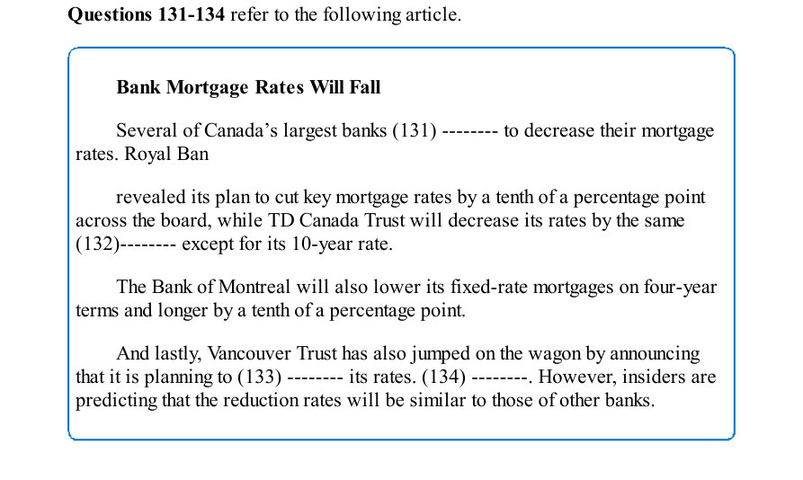
Test 01 · Q136 · Part 6 · ID 36
文字核对：通过；题干 PDF 25–25，答案 PDF 448，解析 PDF 467–467。PDF 25 PDF 448 PDF 467
数据库内容
选择第 136 空的最佳答案。
(A) costs
(B) prices
(C) charges
(D) wages
正确答案：D
根据前文可推断出这里应该是要描述“从他们的所得(工资)中…”，
故选(D)wages。
共用材料 135–138（含原版截图）
Questions 135-138 refer to the following advertisement.
“A net worth of $2.5 million
in just 4 years using London Life’s
simple wealth strategy”
– Jane Booth and Glenda Jackson – Investment Advisers
If you’re looking to get on the (135) -------- to financial freedom but aren’t
sure of what steps to take or if your existing investment portfolio is not doing its
job and needs a major shake up, then we can help.
Many middle-income earners have expressed their opinions on how difficult
it is to get honest, straightforward, and unbiased advice that supports their
financial goals. According to one couple, they were working hard as teachers and
never thought that they could get ahead on their (136) -------- until they
discovered London Life’s simple (137) -------- effective investing techniques. By
following our simple strategy, we were able to amass a small fortune for the
couple! (138) --------.
London Life
• FINANCIAL PLANNING • STOCKBROKING • PROPERTY • FINANCE
PDF 24，截图 1

PDF 25，截图 2
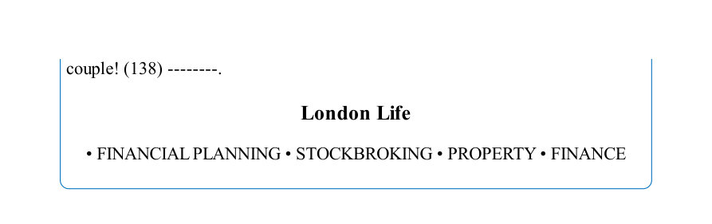
Test 01 · Q144 · Part 6 · ID 44
文字核对：通过；题干 PDF 28–28，答案 PDF 448，解析 PDF 474–474。PDF 28 PDF 448 PDF 474
数据库内容
选择第 144 空的最佳答案。
(A) secure
(B) secured
(C) securely
(D) to secure
正确答案：A
横线处所填单词修饰facility，故形容词(A)secure为正确答案。
共用材料 143–146（含原版截图）
Questions 143-146 refer to the following email.
PDF 27，截图 1
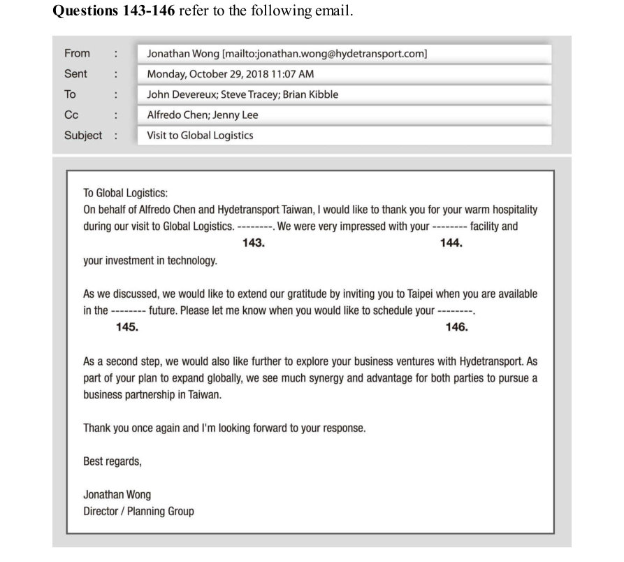
Test 01 · Q154 · Part 7 · ID 54
文字核对：通过；题干 PDF 33–33，答案 PDF 448，解析 PDF 481–481。PDF 33 PDF 448 PDF 481
数据库内容
What might be an appropriate present for the host family?
(A) A toy train
(B) A bottle of whiskey
(C) A camera
(D) A cellular phone
正确答案：A
文中提到，不太贵的手工艺品或给小孩的小礼物比较适合。故答案为
(A)。
共用材料 153–156（含原版截图）
Questions 153-156 refer to the following guidelines.
“HOMESTAY NETWORK” STUDENT GUIDELINES
On arrival at your new home:
• Try to remember the names of your host family. If unsure about how to
address them, it is okay to ask how they would like to be called. For example, if it
is impolite in your country to call someone elder by their first name, ask if it’s
okay to add Mr. or Mrs. in front of their names. —[1]—
• Show your family that you are grateful for being your host. But do not give
expensive gifts. It is, however, considered appropriate to bring inexpensive
handcrafts from your country or a small gift for the children of the host family.
• Your host family will be curious to know more about you. —[2]— Bring
photos of your family and friends to share with them. This is also a great way to
break the ice with them. —[3]—
• After you get settled, your host family will help you make a call to your
parents to assure them that you have arrived safely.
• After you’ve had dinner, you may ask the host family to be excused early.
They will be fully aware of the fact that you might be jet-lagged, so feel free to
ask them.
On your first day of school:
• On your first day of school, your host family will take you to school and
help you with the necessary registration paperwork.
• Your host family will also make sure that you know your way to and from
school. They will also teach you how to use public transportation. —[4]—
• When traveling alone, you should at all times carry a map and the phone
number of your host family.
• In case you are lost and cannot get in touch with your host family, you can
contact the“Homestay Network”.
PDF 32，截图 1
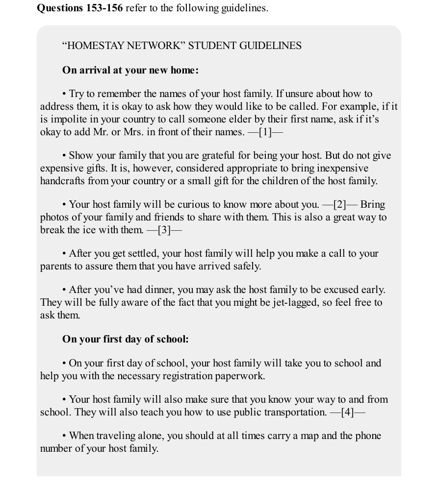
PDF 33，截图 2
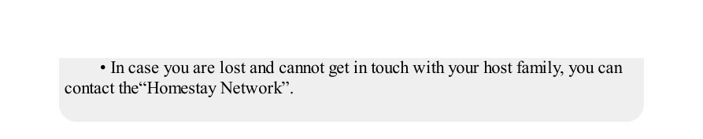
Test 01 · Q168 · Part 7 · ID 68
文字核对：通过；题干 PDF 42–42，答案 PDF 448，解析 PDF 493–493。PDF 42 PDF 448 PDF 493
数据库内容
Who is the intended audience of this advertisement?
(A) People who are in legal trouble
(B) Anyone who is having financial problems
(C) Businesses that are in need of tax breaks
(D) Workers who must do their yearly income taxes
正确答案：B
根据广告内容，可联想到因信用问题经济活动受制约的一类人。答案
是(B)。
共用材料 168–169（含原版截图）
Questions 168-169 refer to the following advertisement.
CREDIT PROBLEM?
CREDIT DENIED?
WE CAN HELP!
( COLLECTION AGENCIES)
• LATE PAYMENTS • REPOSSESSIONS
• BANKRUPTCIES • BIG DEBTS
ICR’S Exclusive $15-million Computer Search Program.
The only one of its kind in the world
How credit agencies may not in compliance
With the Canadian Consumer Reporting Act and what
you can do about it.
“WE REPAIR CREDIT… LEGALLY”
“All information is strictly confidential.”
Consolidate debts into lower monthly payments!
Call for an appointment:
416-755-7898
PDF 40，截图 1

PDF 41，截图 2

Test 01 · Q176 · Part 7 · ID 76
文字核对：通过；题干 PDF 47–47，答案 PDF 448，解析 PDF 501–501。PDF 47 PDF 448 PDF 501
数据库内容
Why did Mr. Robinson write the letter?
(A) To make a complaint about a late delivery
(B) To ask for a change in the delivery date
(C) To invite Ms. Rogers to an auto show
(D) To cancel an order he had made
正确答案：B
第一封信中提到，展会比订单中写的预定日期要提前一周，因此请求
提前配送。答案是(B)。
共用材料 176–180（含原版截图）
Questions 176-180 refer to the following letter and e-mail message.
June 3, 2018
Suzanne Rogers
Ultra-Ergonomic Furniture
Sales and Shipping Department
Suite 58, 107 Morris Circle
Moorabbin, Victoria 3206
Dear Ms. Rogers,
As I’m sure you are aware, our company has been organizing conventions,
festivals, and other large corporate events for the last fifteen years, and in fact we
are leaders in the field. We have relied on Ultra-Ergonomic Furniture for
purchase and rental supplies of high-quality furniture for that entire period, and
we’ve never had any cause for complaints with regard to your services.
I am writing to you personally to ask a special favor. We recently made an
order with your company for the supply of rental furniture that includes chairs,
tables, partitions, and lecterns for an auto show (see order no. 11-35698A).
Unfortunately, a serious error was made. In fact the exposition begins one week
earlier than indicated on the order form. The starting date is actually July 7. I
would appreciate it very much if you could try to do everything you can to ensure
that our order be delivered to us on that date. Also, if possible, I’d like to add 20
Pop-up displays on top of our original order.
I realize that this is a big favor to ask, but on the basis of our long-term
business relationship, I hope that you will be able to find a way.
I’m really sorry for any inconvenience. Please contact me soon.
Yours sincerely,
Michael Robinson
Michael Robinson
Properties Manager
mrobinson@btc.com
From: srogers@uef.shipping.com
Sent: June 8, 2018
To: mrobinson@btc.com
Subject: Your request
Dear Mr. Robinson,
Thank you for your letter. I was surprised, and of course concerned, that you
find yourself in this unfortunate situation. And of course I will do my best to help
you. Your company has been one of our best clients since we began operations in
1978.
Anyway, I personally took a trip down to our warehouse this morning to
have a closer look at our stock to see if we have all the things you need for your
convention — which I believe is from July 7 to July 14. I am happy to say that we
will be able to provide you with everything you originally requested. However,
as for the additional request you made, it won’t be possible because we have
already rented them out to another client during that week.
My suggestion is that you come down to my office to discuss other
possibilities. I can take you down to our warehouse, and you can look at our
inventory. So, please call me soon to arrange a time.
Kind regards,
Suzanne Rogers,
Sales and Shipping Department
PDF 45，截图 1
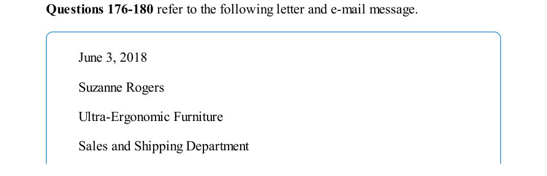
PDF 46，截图 2

PDF 47，截图 3
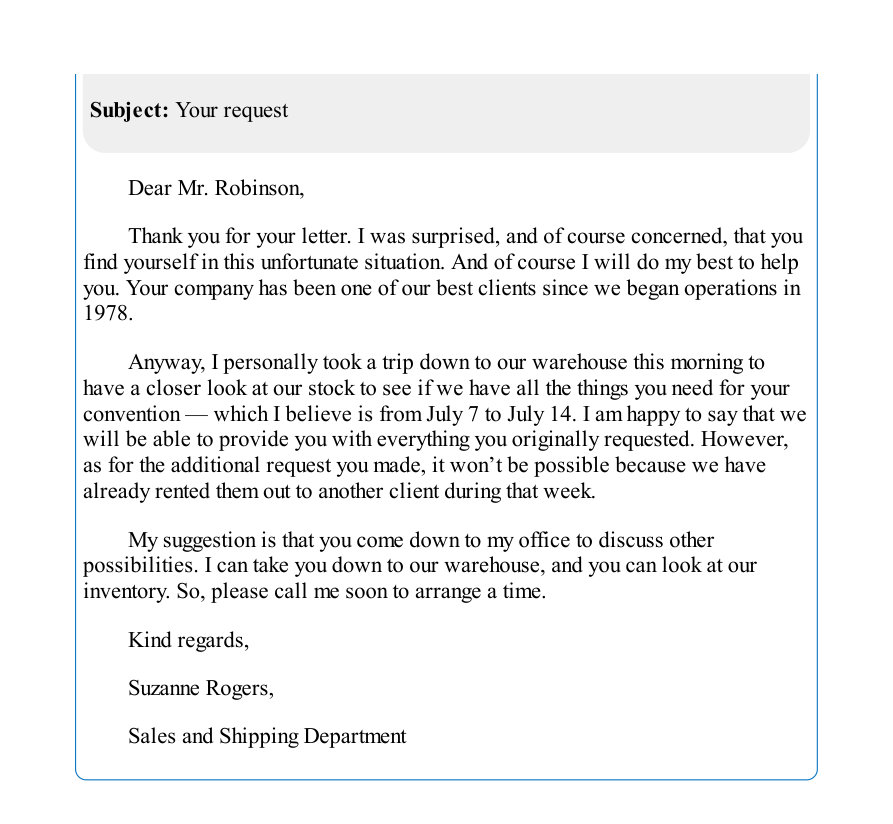
Test 01 · Q178 · Part 7 · ID 78
文字核对：通过；题干 PDF 48–48，答案 PDF 448，解析 PDF 502–502。PDF 48 PDF 448 PDF 502
数据库内容
What does Suzanne say about Michael’s company?
(A) It has been a loyal customer of her company for a number of years.
(B) It will eventually get itself out of the unfortunate situation it is facing at the moment.
(C) It should outsource some of the work to speed up the work process.
(D) It needs to expand into other areas of business.
正确答案：A
本题与苏珊娜提及的内容有关，因此要在苏珊娜的邮件中寻找答案。
苏珊娜对迈克尔的公司是这样评价的：Your company has been one of our
best clients since...in 1978。答案是(A)。选项中one of our best
clients换成了a loyal customer of her company，since we began
operations in 1978换成了for a number of years。
共用材料 176–180（含原版截图）
Questions 176-180 refer to the following letter and e-mail message.
June 3, 2018
Suzanne Rogers
Ultra-Ergonomic Furniture
Sales and Shipping Department
Suite 58, 107 Morris Circle
Moorabbin, Victoria 3206
Dear Ms. Rogers,
As I’m sure you are aware, our company has been organizing conventions,
festivals, and other large corporate events for the last fifteen years, and in fact we
are leaders in the field. We have relied on Ultra-Ergonomic Furniture for
purchase and rental supplies of high-quality furniture for that entire period, and
we’ve never had any cause for complaints with regard to your services.
I am writing to you personally to ask a special favor. We recently made an
order with your company for the supply of rental furniture that includes chairs,
tables, partitions, and lecterns for an auto show (see order no. 11-35698A).
Unfortunately, a serious error was made. In fact the exposition begins one week
earlier than indicated on the order form. The starting date is actually July 7. I
would appreciate it very much if you could try to do everything you can to ensure
that our order be delivered to us on that date. Also, if possible, I’d like to add 20
Pop-up displays on top of our original order.
I realize that this is a big favor to ask, but on the basis of our long-term
business relationship, I hope that you will be able to find a way.
I’m really sorry for any inconvenience. Please contact me soon.
Yours sincerely,
Michael Robinson
Michael Robinson
Properties Manager
mrobinson@btc.com
From: srogers@uef.shipping.com
Sent: June 8, 2018
To: mrobinson@btc.com
Subject: Your request
Dear Mr. Robinson,
Thank you for your letter. I was surprised, and of course concerned, that you
find yourself in this unfortunate situation. And of course I will do my best to help
you. Your company has been one of our best clients since we began operations in
1978.
Anyway, I personally took a trip down to our warehouse this morning to
have a closer look at our stock to see if we have all the things you need for your
convention — which I believe is from July 7 to July 14. I am happy to say that we
will be able to provide you with everything you originally requested. However,
as for the additional request you made, it won’t be possible because we have
already rented them out to another client during that week.
My suggestion is that you come down to my office to discuss other
possibilities. I can take you down to our warehouse, and you can look at our
inventory. So, please call me soon to arrange a time.
Kind regards,
Suzanne Rogers,
Sales and Shipping Department
PDF 45，截图 1
PDF 46，截图 2
PDF 47，截图 3
Test 01 · Q183 · Part 7 · ID 83
文字核对：通过；题干 PDF 50–51，答案 PDF 448，解析 PDF 506–506。PDF 50 PDF 51 PDF 448 PDF 506
数据库内容
According to the e-mail, which of the following places will most likely suit Ms. Brown the most?
(A) Santa Rosa
(B) Warehouse Conversion
(C) Victorian Terrace
(D) None of them
正确答案：B
布朗女士在邮件中提到需要一个能够实现美术工作室和展览室功能的
住宅。根据广告中描述的售房信息可知，仓库改建公寓最适合。答案是
(B)。
共用材料 181–185（含原版截图）
Questions 181-185 refer to the following advertisement and e-mail message.
Prestige Properties now Available
For discerning customers seeking unique properties, The Hills Real
Estate Agency is pleased to announce the availability of the following
residences in the most upscale parts of our city:
Santa Rosa
This beautiful Spanish-style mansion extends over a gently sloping half-acre
block. Constructed during the boom period of the 1920s, it has retained many
original architectural and historical features while the kitchen and bathrooms
have been tastefully modernized. Stunning sandstone contrasts with green lawns
and colorful flower gardens, with views of the ocean from the second floor. Call
now, to arrange a viewing.
Warehouse Conversion
If you are seeking an open-plan style apartment located in the heart of the
vibrant inner city that is quiet and secure with a tranquil courtyard in its heart, this
is the property for you. Truly a unique opportunity, this 3-bedroom, 2-bathroom,
architect-designed conversion can offer tranquility and space for your artistic
endeavors or can open up to be the perfect party house. Inspect now.
Victorian Terrace
They don’t come much more sophisticated than this 3-story Victorian terrace
built in 1885. Located on a wide semi-circular street opposite elegant Victoria
Park, the front garden and wide upper-level balcony are bathed in generous
sunshine during the winter months while being protected from the wind. A rare
opportunity for those who love combining comfortable living with elegant
entertaining. A large living room adjoins a magnificent dining area served by a
modern kitchen with plenty of bench-space. Three upstairs bedrooms, two with
en-suite bathrooms, plus a guest bathroom on the ground floor, complete the
picture.
For further information and to arrange inspections (appointment only) please
call our office at 965-2254 or 965-2255 or e-mail at johnconnor@thehills.com
To: johnconnor@thehills.com
From: lisabrown@kyu.com
Subject: Interested buyer
Dear Mr. Connor,
I was very interested by your recent advertisement. I am seeking a residence
that can accommodate an art studio and possibly hold private exhibitions for the
work I do. One of the listed places sounds like it could be suitable for my needs.
Therefore, I would like to meet with you soon to take a look at the place. Could
you please let me know when a good time for you is? I am okay anytime this week
except for Wednesday evening. Please get back to be as soon as possible.
Thanks so much for your attention.
Lisa Brown: 755-1207
PDF 48，截图 1
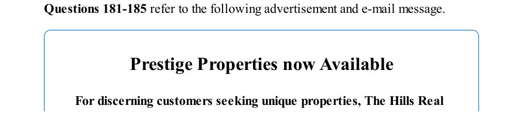
PDF 49，截图 2

PDF 50，截图 3
Test 01 · Q190 · Part 7 · ID 90
文字核对：通过；题干 PDF 54–54，答案 PDF 448，解析 PDF 512–512。PDF 54 PDF 448 PDF 512
数据库内容
In the memo, the word“terms” in line 4 is closest in meaning to
(A) negotiations
(B) periods
(C) opportunities
(D) conditions
正确答案：D
“terms”一词指的是提供给两位申请人的年薪、带薪假期、综合医
疗保险以及其他福利。故答案为(D)。
共用材料 186–190（含原版截图）
Questions 186-190 refer to the following schedule, e-mail, and memo.
Florentine Engineering
Interview Schedule
All interviews should be recorded. You must inform the applicants this is
being done. Failure to agree will result in the termination of the interview.
Impressions of the applicant should be written down within two hours of
completing the interview and then sent to the head of the R&D Department.
To: Lucian Ball <lball@gregorson.com>
From: Brian Stephenson <brians@florentineengineering.com>
Subject: Engineering Position
______________________________________________________________
Date: June 25
Dear Mr. Ball,
After careful consideration, the hiring committee has decided to extend an
offer of employment to you for the engineering position. Should you accept our
offer, you will receive an annual salary of $57,000 as well as two weeks of paid
vacation, comprehensive medical insurance, and other benefits. These terms are
identical to the ones we discussed on the date of your interview.
As you will be moving from out of state, we can provide a limited amount of
financial assistance. Please contact Libby Wellman
(libby_w@florentineengineering.com) in the HR Department with more details.
We would like for you to start your employment on July 25. We request that
you inform us of your decision by July 1. You can contact me at (803) 837-3836
if you have any questions regarding the terms of your employment.
Regards,
Brian Stephenson
Director, R&D Department
Florentine Engineering
To: Libby Wellman, HR Director
From: Brian Stephenson
Date: June 30
Subject: Engineering Position
I was informed by Mr. Ball this morning that he has turned down our offer of
employment even after we said we’d pay him an extra $10,000 a year in salary.
As such, we have decided to give the job to Sally McDaniel. Her interviewer
convinced me that she’s the best candidate for the position. We will be offering
her the same terms which we originally offered Mr. Ball. You may receive an e-
mail from Ms. McDaniel at some point inquiring about various matters,
particularly moving from another state.
PDF 51，截图 1
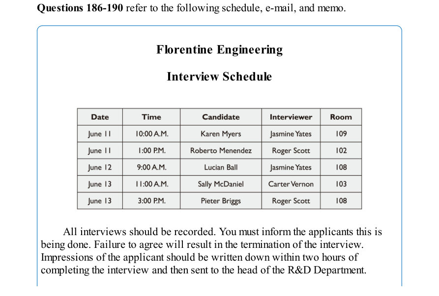
PDF 52，截图 2
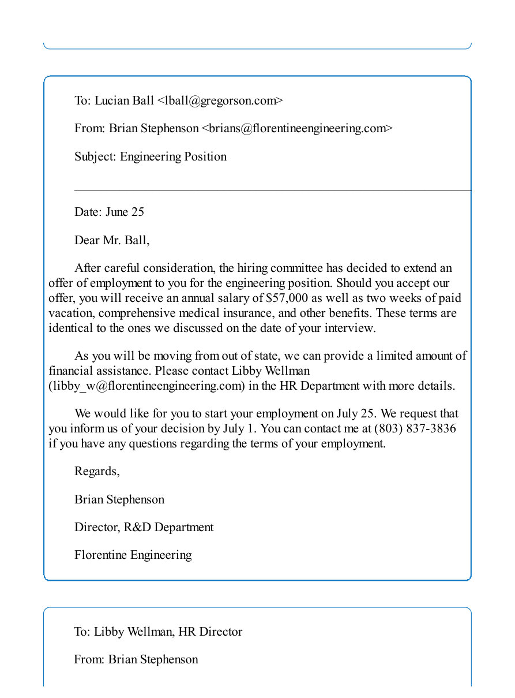
PDF 53，截图 3
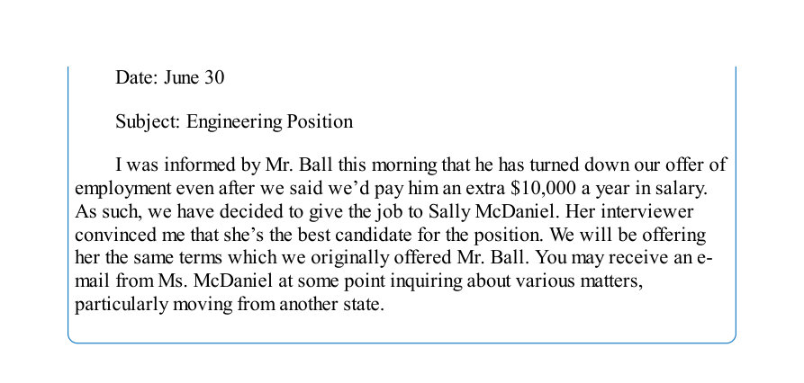
Test 02 · Q113 · Part 5 · ID 113
文字核对：通过；题干 PDF 64–64，答案 PDF 523，解析 PDF 530–530。PDF 64 PDF 523 PDF 530
数据库内容
------- Mr. Bingham’s promotion became official, many of his colleagues have approached him to congratulate him.
(A) Despite
(B) Still
(C) Since
(D) During
正确答案：C
Mr. Bingham’s promotion became official结构完整，因
此横线处应填入从属连词。备选答案中只有(C)Since(自从)是从属连词。当
备选答案既有介词也有连词时，可观察横线后跟的是名词短语还是具有完整
结构的句子，用排除法判断答案，可以节约解题时间。
Test 02 · Q114 · Part 5 · ID 114
文字核对：通过；题干 PDF 64–64，答案 PDF 523，解析 PDF 530–530。PDF 64 PDF 523 PDF 530
数据库内容
John Clarke, who is in the prime of his career, has been ranked ------- the top 10 players in tennis history by Sports Daily.
(A) at
(B) into
(C) among
(D) from
正确答案：C
由备选答案可以看出，本题考查介词。谓语has been ranked
后用the top 10 players in tennis history(网球史上的十佳选手)限制了
具体范围，因此(C)among(在…之中)最恰当。
Test 02 · Q120 · Part 5 · ID 120
文字核对：通过；题干 PDF 66–66，答案 PDF 523，解析 PDF 533–533。PDF 66 PDF 523 PDF 533
数据库内容
After a long and gruesome season, Jeff Willis has been performing ------- better since the playoffs started a week ago.
(A) significance
(B) significant
(C) significancy
(D) significantly
正确答案：D
横线处需要填入修饰形容词比较级better的副词，因此答案
是(D)significantly(显著地，明显地)。
Test 02 · Q127 · Part 5 · ID 127
文字核对：通过；题干 PDF 67–68，答案 PDF 523，解析 PDF 537–537。PDF 67 PDF 68 PDF 523 PDF 537
数据库内容
The ------- tough training given by our company creates strong and able sales representatives who perform well above others in the same field.
(A) indifferently
(B) presumably
(C) completely
(D) unbearably
正确答案：D
本题需选择可与tough搭配的副词。tough training(高强度
培训)令人难以忍受，故(D)unbearably(难以忍受地)符合题意。
Test 02 · Q136 · Part 6 · ID 136
文字核对：通过；题干 PDF 71–71，答案 PDF 523，解析 PDF 543–543。PDF 71 PDF 523 PDF 543
数据库内容
选择第 136 空的最佳答案。
(A) regard
(B) regards
(C) regarded
(D) regarding
正确答案：C
横线处被副词highly修饰，应填入形容词、现在分词或过去分词。句
意为“了解杂志排版、印刷广告设计和印前工作的应聘者将被优先考虑”，
因此应是被动语态。故答案是(C)regarded。
共用材料 135–138（含原版截图）
Questions 135-138. refer to the following advertisement.
WANTED
DESIGNER FOR 3D SYMPHONY MAGAZINE
London’s premier classical music magazine, 3D Symphony, is seeking a
designer to join our team.
The ideal candidate is someone (135) -------- qualifications must include a
working knowledge of Adobe Creative Suite 2 (Indesign, Adobe Acrobat,
Photoshop and Illustrator) on a MAC OS X platform. An understanding of
magazine layout, press ad design, and pre-press will be highly (136) --------.
The position is part-time from Wednesday to Friday. (137) --------. The
candidate must also be reliable and possess a keen eye for detail. If selected,
you’ll have the advantage of working within a young and dynamic team (138) ----
----.
Expressions of interest can be emailed to Joan@threedsymphony.com.
PDF 70，截图 1
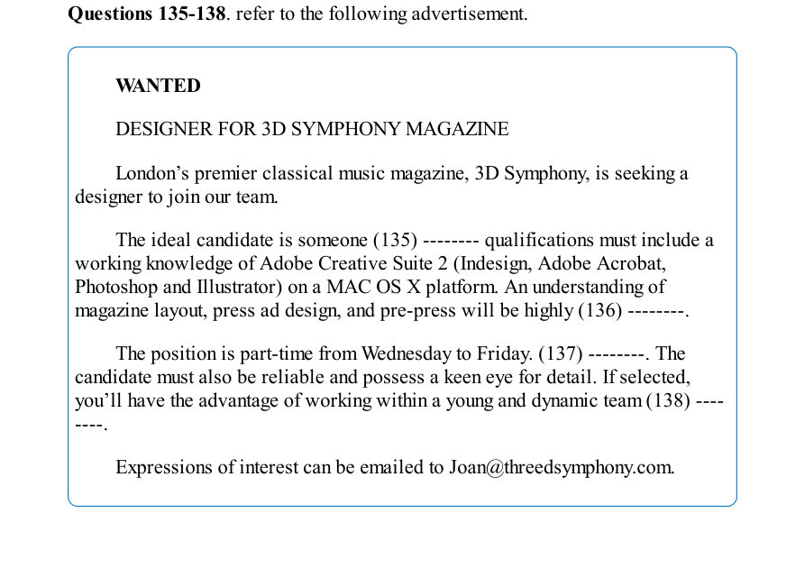
Test 02 · Q142 · Part 6 · ID 142
文字核对：通过；题干 PDF 72–72，答案 PDF 523，解析 PDF 547–547。PDF 72 PDF 523 PDF 547
数据库内容
选择第 142 空的最佳答案。
(A) less
(B) fewer
(C) a few
(D) least
正确答案：D
横线前有定冠词the，故选最高级(D)least。
共用材料 139–142（含原版截图）
Questions 139-142. refer to the following news.
Pet Dislikes of Urban Life
According to a survey conducted by the city of Boston, traffic, pollution and
noise were found to be the least (139) -------- aspects of living in the city.
The (140) -------- was administered as part of the city’s local action plan.
(141) --------.
The results of the survey communicated proximity (27.02 percent) and
community character/village feel (11.54 percent) to be at the top of the list of
things most liked about city life.
The respondents felt the protection or enhancement of heritage (16.1
percent) and open space (15.59 percent) were the two things they most desired
the city to have.
On the other hand, traffic (10.22 percent), general noise (9.98 percent), and
parking (7.52 percent) within the main core of the city were the (142) --------
attractive parts of living in the city.
PDF 71，截图 1

PDF 72，截图 2
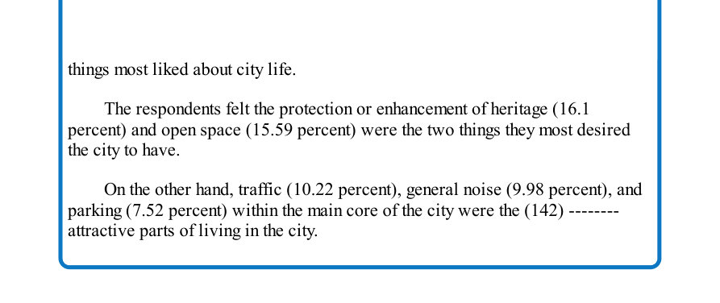
Test 02 · Q145 · Part 6 · ID 145
文字核对：通过；题干 PDF 73–74，答案 PDF 523，解析 PDF 549–549。PDF 73 PDF 74 PDF 523 PDF 549
数据库内容
选择第 145 空的最佳答案。
(A) win
(B) gain
(C) earn
(D) catch
正确答案：D
句意为“下次这些才华横溢的艺术家出现在你居住的地区时，一定要
一睹他们的风采”，故选(D)catch。catch最常用的词义是“捕获，捉
住”，但也有“看”的意思，如catch a movie(看电影)。
共用材料 143–146（含原版截图）
Questions 143-146. refer to the following notice.
Editor’s Welcome
Welcome to Street Life’s live and intimate celebration of the 200th edition of
(143) --------.
In the next few pages, we have a special feature to let you meet the
luminaries who have made great contributions to our magazine. (144) --------. If
you can’t physically be there tonight, settle back, and enjoy our magazine, and try
to (145) -------- some of these talented artists the next time they are in your area.
So as the curtains go up on the night of nights — Street Life’s celebration of
200 fabulous editions — please raise your glass to Toronto’s most popular
magazine.
Here’s to (146) -------- 200 editions!
Carl Stevens
PDF 73，截图 1
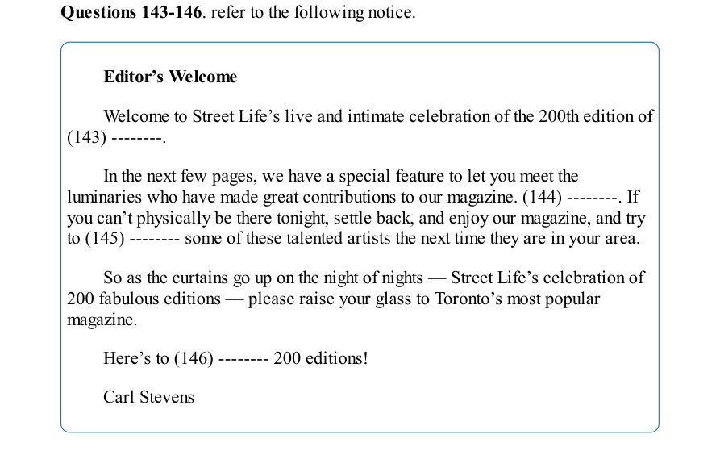
Test 02 · Q149 · Part 7 · ID 149
文字核对：通过；题干 PDF 75–75，答案 PDF 523，解析 PDF 553–553。PDF 75 PDF 523 PDF 553
数据库内容
What can be implied from the advertisement?
(A) Most travelers don’t make a habit of making reservations prior to checking in.
(B) There is a business relationship between the credit card company and the hotel.
(C) The hotel gets very busy during the summer season.
(D) It usually takes a minimum of 10 days for a credit card to clear.
正确答案：B
由you will save 20% on all rooms... by using your American
Express Corporate Card可知，酒店和信用卡公司在业务上有战略合作关
系。
共用材料 147–149（含原版截图）
Questions 147-149. refer to the following advertisement.
SAVE 20%
It’s only a phone
call away
MAYCOTT HOTELS
Over 30 five-star hotels all over the nation to suit your every need
Reserve a room today, and you will save 20% on all rooms at
Maycott“Room for the Day” (excluding tax) by using your American Express
Corporate Card.
Due to seasonal demands, the availability of rooms may be subject to each
hotel’s situation. An advanced reservation, to be made by calling our toll free
number 1-800-755-0090 at least 10 working days before your stay, is required to
qualify for the discount.
PDF 74，截图 1

PDF 75，截图 2
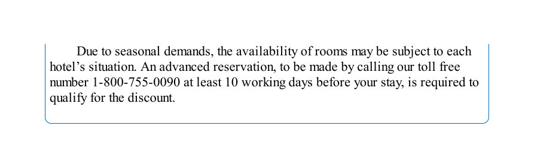
Test 02 · Q161 · Part 7 · ID 161
文字核对：通过；题干 PDF 81–81，答案 PDF 523，解析 PDF 563–563。PDF 81 PDF 523 PDF 563
数据库内容
At 10:22 A.M., what does Mr. Rimes mean when he writes,“Agreed”?
(A) To indicate he is willing to meet
(B) To show he approves of the contract
(C) To note he can meet the next day
(D) To say Ms. Wilson’s plan will work
正确答案：A
朱莉提出在所有工作开始之前大家先见一面，莱姆斯先生回复说“同
意”，表明他同意见面。所以答案是 (A)。
共用材料 158–161（含原版截图）
Questions 158-161. refer to the following online chat discussion.
Harold Rimes [10:11 A.M.]
Great news, everyone. The owner of the building at 465 Washington Avenue
agreed to rent the space to us.
Julie Wilson [10:13 A.M.]
Excellent. Now we can open our café. Did we get the price we requested?
Susanna Chapman [10:14 A.M.]
I can’t wait to start.
Harold Rimes [10:15 A.M.]
Almost. We’re paying $50 a month more than we requested. And we have to
sign a contract this month, so we’ll get the place a month earlier than we wanted.
Susanna Chapman [10:16 A.M.]
We can just move the timeline up then.
Julie Wilson [10:17 A.M.]
What about the inspector? We can’t open until he visits.
Susanna Chapman [10:18 A.M.]
I’m sure we can get him to come a month early. We’ll also have to talk with
our suppliers.
Harold Rimes [10:19 A.M.]
I’ll handle that. Julie, you know the interior decorator, so speak to her and
ask her to come early.
Julie Wilson [10:20 A.M.]
Got it. But before we do anything, we ought to meet in person. Let’s discuss
everything to make sure everyone’s on the same page.
Susanna Chapman [10:21 A.M.]
Okay. How about the usual place at 6:00 this evening?
Harold Rimes [10:22 A.M.]
Agreed.
PDF 79，截图 1
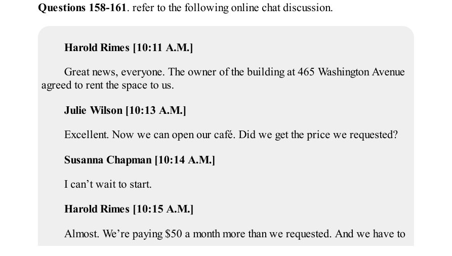
PDF 80，截图 2
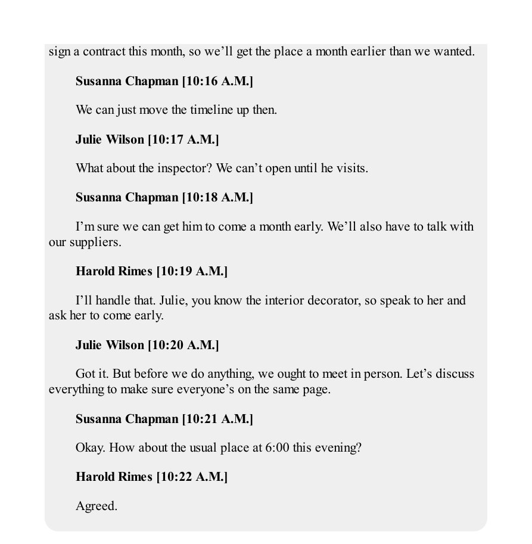
Test 02 · Q171 · Part 7 · ID 171
文字核对：通过；题干 PDF 87–87，答案 PDF 523，解析 PDF 572–572。PDF 87 PDF 523 PDF 572
数据库内容
In which of the positions marked [1], [2], [3], and [4] does the following sentence best belong? “You don’t need to find out if they are hiring or have a definite need.”
(A) [1]
(B) [2]
(C) [3]
(D) [4]
正确答案：C
所给句子是说“你不必去打听他们是否正要聘请咨询公司或者有确切
的需求。”由此可知，发件人在寻求帮助。文中提及“寻求帮助”的是第二
段，而选项(C)前后两个句子分别提到了who in your circle和them，和本
句中的they呼应，故为正确答案。
共用材料 169–171（含原版截图）
Questions 169-171. refer to the following letter.
November 27
Dear Tammy,
How are things with you? I’ve now established Karen Jones & Associates
(KJA), an independent consulting practice that leverages my proven strengths in
strategic planning, people development, creating and improving processes, and
brand marketing. —[1]—I work extensively with consumer product companies
and also now with industries that are regrouping due to a merger or major change
in their competitive situation. I help them manage the pressure to achieve more in
their marketplace by realizing more out of the people and resources they have. —
[2]— What they say is of unique value to them is my expertise at creating new
links between marketing, culture, and talent. This makes a company more efficient
and successful.
I’m really excited about how I can help companies address their business
problems with what I do. I would love to get your input. I’m interested in your
thoughts as to who in your circle could benefit from learning about what I do. —
[3]— I’m just interested in having a conversation with them to learn more about
their marketing challenges and HR concerns and to share with them some
innovative ways I’ve helped other companies achieve the most in those areas. —
[4]—
If this sounds interesting, I’d appreciate your linking me to people you know.
I will call you in a few days for a quick catch-up conversation. In the meantime,
I’ve attached an information sheet about KJA and its practice areas. Please freely
forward it now and any time to business contacts you think could be interested in
knowing about this. Thanks, and I’m looking forward to catching up with you.
Regards,
Karen Jones
PDF 86，截图 1
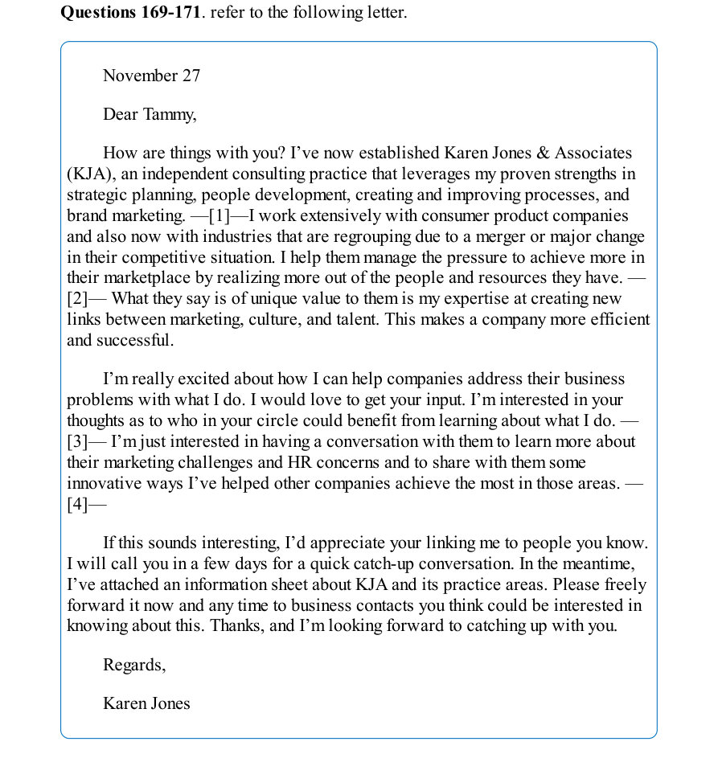
Test 02 · Q186 · Part 7 · ID 186
文字核对：通过；题干 PDF 97–97，答案 PDF 523，解析 PDF 586–586。PDF 97 PDF 523 PDF 586
数据库内容
What is indicated about the offer for the VIP Drivers’ Club?
(A) It is good only at certain branches.
(B) It is only for returning customers.
(C) It requires the payment of a fee.
(D) It lasts for a single month.
正确答案：D
广告开头提到“6月特惠活动，仅限本月”，末尾又提到“6月博克瑟
汽车租赁公司的所有顾客均可以享受以下优惠折扣”，由此可知特惠活动将
持续一个月。故答案为(D)。
共用材料 186–190（含原版截图）
Questions 186-190. refer to the following advertisement, letter, and e-mail.
Boxer Rental Car
June is having a special offer this month only.
Become a member of our VIP Drivers’ Club
and receive a 10% discount each time you rent a vehicle from us.
You’ll also get double bonus points the next 5 times you rent from us.
To apply, go to www.boxerrentalcar.com/VIPdriversclub
and complete the form in its entirety.
You’ll be notified of the status of your application
within 3 business days.
In the meantime, all customers can enjoy these special rates from Boxer
during the month of June:
•Sedan: $50 per day
•SUV: $65 per day
•Luxury car: $80 per day
•Sports car: $90 per day
June 11
David Coffey
849 Oiler Avenue
Omaha, NB
Dear Mr. Coffey,
Congratulations. You’re the newest member of Boxer Rental Car’s VIP
Drivers’ Club. Your membership number is 4589094. Please go to
www.boxerrentalcar.com and click on the“VIP Drivers’ Club” icon. When you
attempt to log in, use your membership number. Your temporary password is
Ykle76Km. You can alter it after completing the registration process.
Please be advised that you’re not eligible for any discounts until you’re
registered on the site. So to qualify for your 10% discount, please sign up once
you receive this letter.
Be sure to read the brochure included with this letter. You can learn about
the advantages of membership. If you have any questions, call our hotline at 1-
888-494-2384 twenty-four hours a day, seven days a week.
Sincerely,
Jefferson Muller
Boxer Rental Car
To: davidcoffey@marigold.com
From: reservations@boxerrentalcar.com
Date: June 14
Subject: Reservation #9458-4938
Dear Mr. Coffey,
This e-mail is to confirm your telephone reservation. The following is the
information we recorded for reservation #9458-4938:
Pickup: June 21, 1:00 P.M. at Miami International Airport
Car Model: Patterson Apache
Rate: $65/day
Drop-off: June 26, 10:00 A.M. at Miami International Airport
You don’t qualify for any special discounts. You must return the vehicle with
a full tank of gas. Otherwise, you’ll be charged a $50 refilling fee and have to pay
the price of the gas added to the vehicle. If you return the vehicle more than 1
hour late, you will be charged an additional day’s rent.
Regards,
Reservation Team
Boxer Rental Car
PDF 94，截图 1

PDF 95，截图 2
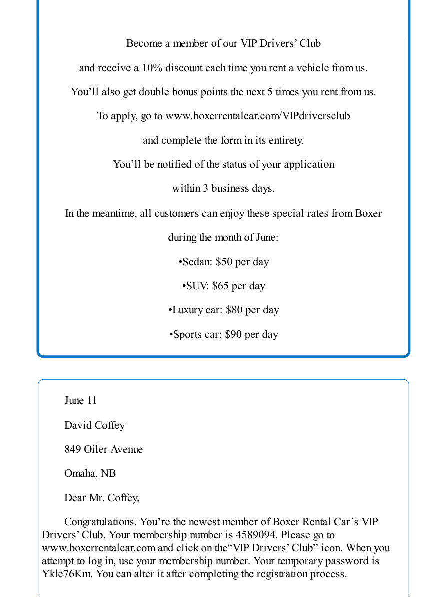
PDF 96，截图 3

PDF 97，截图 4
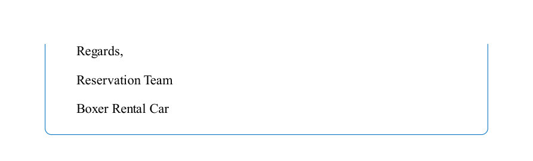
Test 02 · Q192 · Part 7 · ID 192
文字核对：通过；题干 PDF 100–100，答案 PDF 523，解析 PDF 591–591。PDF 100 PDF 523 PDF 591
数据库内容
Who most likely is Mr. Morris?
(A) A travel agent
(B) A manager
(C) An accountant
(D) A negotiator
正确答案：A
莫里斯先生会为哈特菲尔德女士安排行程并预订酒店，所以他可能是
一名旅行社代理人。答案为(A)。
共用材料 191–195（含原版截图）
Questions 191-195. refer to the following e-mail, text message, and article.
To: Deborah Hatfield <deborah_h@dresden.com>
From: Ronald Salt <rsalt@dresden.com>
Re: Scofield Manufacturing
Date: September 18
Deborah,
Since Marty Winger handed in his resignation, we are assigning his work
projects to other members of his department. You’ve been chosen to represent us
with Scofield Manufacturing. It just so happens that Marty was planning to fly to
Zurich to discuss an issue in our contract with them. You need to fly there in his
place. I’ll have Zachary Morris make your travel arrangements and book a room
for you. He’ll get in touch with you within the hour. In addition, you should be in
my office today at 1:00 P.M. so that I can tell you everything I know about
Scofield. You’ll have to review several files prior to meeting with them. It won’t
be easy, but I’m sure you’re up for the challenge.
Regards,
Ron
Ronald Salt [11:04 A.M.]
Hi, Deborah. Anything to report?
Deborah Hatfield [11:06 A.M.]
I’ve been meeting with the people at Scofield for the past two days. They’re
mostly happy with the work we’re doing, but they want to renegotiate the contract.
Ronald Salt [11:07 A.M.]
Did they say why?
Deborah Hatfield [11:08 A.M.]
They’re convinced they’re being overcharged. They’re threatening to cancel
the entire contract if we don’t lower the price.
Ronald Salt [11:09 A.M.]
Okay, tell them to wait a bit. I’m sending Lon Meadows there. He’s our lead
accountant and is familiar with the contract. He should be there sometime
tomorrow morning.
Deborah Hatfield [11:10 A.M.]
Thanks. I’ll inform Mr. Jurgen and ask him to be patient.
http://www.dresden.com
Several Employees Receive Promotions
(November 19) – Several Dresden, Inc. employees were recently promoted
for their outstanding performances. Deborah Hatfield was promoted to senior
manager and was transferred to headquarters in Duluth. Andrea Copperfield
received a promotion to the head of the R&D Department at the El Paso branch.
She will remain at the same place at her request. Lon Meadows, who was also
selected as the employee of the quarter for the third quarter of this year thanks to
the stellar work he did abroad, was promoted to senior accountant. He will
remain at his branch as he’s replacing Erwin Peters, who’s retiring at the end of
the year.
PDF 98，截图 1

PDF 99，截图 2

PDF 100，截图 3
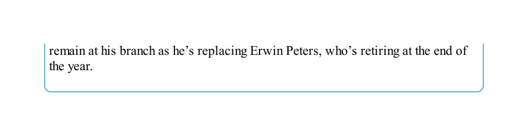
Test 02 · Q196 · Part 7 · ID 196
文字核对：通过；题干 PDF 103–103，答案 PDF 523，解析 PDF 596–596。PDF 103 PDF 523 PDF 596
数据库内容
What is NOT indicated about the receptionist position?
(A) Being able to talk to others is important.
(B) It requires a college degree.
(C) Some experience is necessary.
(D) Applicants must know a foreign language.
正确答案：D
接待员的职位要求是：两年工作经验、四年制大学学位、举止友好并
能与人相处融洽、有外语知识者优先，并未要求必须懂一门外语。答案为
(D)。
共用材料 196–200（含原版截图）
Questions 196-200. refer to the following advertisement, e-mail, and memo.
Apply for a Job at Edison Manufacturing
Edison Manufacturing is opening a facility in Bynum and requires hundreds
of new employees. Here are a few of the positions which must be filled:
Assembly Line Worker (Job #4985) – No experience necessary. High school
diploma a must. You’ll be trained for two weeks before starting your job.
$40,000/year. Full benefits.
Factory Manager (Job #2912) – 5 years of management experience needed.
College degree required. Must be an outstanding multitasker and have good
people skills. $106,000/year. Full benefits.
Receptionist (Job #5990) – 2 years of experience necessary. Should have a
degree from a four-year school. Must have a friendly demeanor and be
comfortable dealing with individuals from around the world. Foreign language
knowledge is a plus. $50,000/year. Full benefits.
Delivery Driver (Job #8443) – Must have a class C driver’s license and a clean
driving record. Must be punctual and be able to lift objects weighing up to 40kg
numerous times a day. No diploma necessary. Full-time work. $32,000/year. Full
benefits.
Go to www.edisonmanufacturing.com/jobs to learn about the positions you
can apply for. Apply online by clicking here.
To: Kelly Steward <kstewart@personalmail.com>
From: Melvin Hubbard <mhubbard@edisonmanufacturing.com>
Subject: Application
Date: April 27
Dear Mr. Stewart,
Your application for job number 4985 at the Bynum facility has been
received. You have been selected to interview for the position at 9:00 A.M. on
May 1. Please visit the Bynum facility at 984 Copper Road and tell the
receptionist you are scheduled to meet with Mr. Van Herder. You will receive
further instructions there. Should you pass the interview, you will be scheduled
for a second one during the second week of May.
Regards,
Melvin Hubbard
HR Department
Edison Manufacturing
To: Jeffrey Wayans
From: Melvin Hubbard
Subject: New Employees
Date: May 15
The following individuals were offered positions at Edison Manufacturing
and subsequently accepted them:
Carol Addison
David Belvedere
Roger Kirchner
Kelly Stewart
Theobald Vandyke
Sylvia Wayne
Their orientation session is scheduled for May 25. I’ll be sending a longer
list of new employees tomorrow. Those individuals will also be receiving
orientation on the 25th.
PDF 101，截图 1

PDF 102，截图 2

PDF 103，截图 3
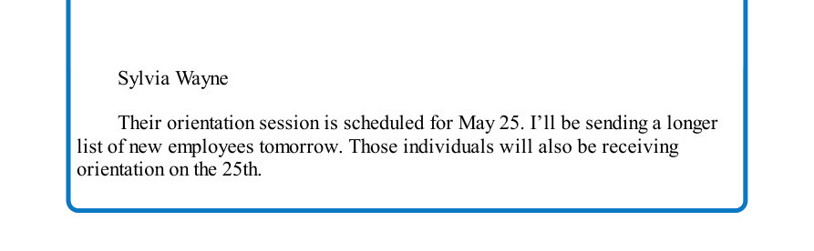
Test 03 · Q101 · Part 5 · ID 201
文字核对：通过；题干 PDF 105–105，答案 PDF 600，解析 PDF 601–601。PDF 105 PDF 600 PDF 601
数据库内容
Our new social organizer’s personal favorites do not include jazz or classical music, but she loves listening to techno, world music, ------- rock.
(A) so
(B) but
(C) yet
(D) and
正确答案：D
列出几项有并列关系的语句时，在最后一项前加and，其他项
用逗号分开。文中列出了techno、world music、rock三个音乐种类，因此
要在最后一项rock前使用并列连词(D) and。
Test 03 · Q104 · Part 5 · ID 204
文字核对：通过；题干 PDF 106–106，答案 PDF 600，解析 PDF 601–601。PDF 106 PDF 600 PDF 601
数据库内容
At this year’s orientation session, the general manager ------- took the time to personally welcome all new recruits in her usual, affable manner.
(A) she
(B) her
(C) hers
(D) herself
正确答案：D
反身代词可作主语或宾语的同位语表示强调，一般置于所强
调词的后面。本句中反身代词(D) herself强调的是句子的主语。
Test 03 · Q108 · Part 5 · ID 208
文字核对：通过；题干 PDF 107–107，答案 PDF 600，解析 PDF 604–604。PDF 107 PDF 600 PDF 604
数据库内容
The music faculty offers free weekly seminars designed to encourage young musicians to begin ------- their own masterpieces.
(A) composer
(B) composes
(C) composed
(D) composing
正确答案：D
begin后可以接动名词或不定式作宾语，故选(D)
composing。
Test 03 · Q144 · Part 6 · ID 244
文字核对：通过；题干 PDF 118–118，答案 PDF 600，解析 PDF 627–627。PDF 118 PDF 600 PDF 627
数据库内容
选择第 144 空的最佳答案。
(A) The task may not be that easy to fulfill.
(B) I hope that a profit sharing of 60/40 will be okay with you.
(C) We are looking for an arrival on the day after shipment.
(D) The shipment’s content contains books and magazines.
正确答案：C
上句说发货次数，下句询问对方能否承担此项工作。可知，横线处应
继续描述运货要求，故选(C)。
共用材料 143–146（含原版截图）
Questions 143-146 refer to the following e-mail.
PDF 117，截图 1

PDF 118，截图 2
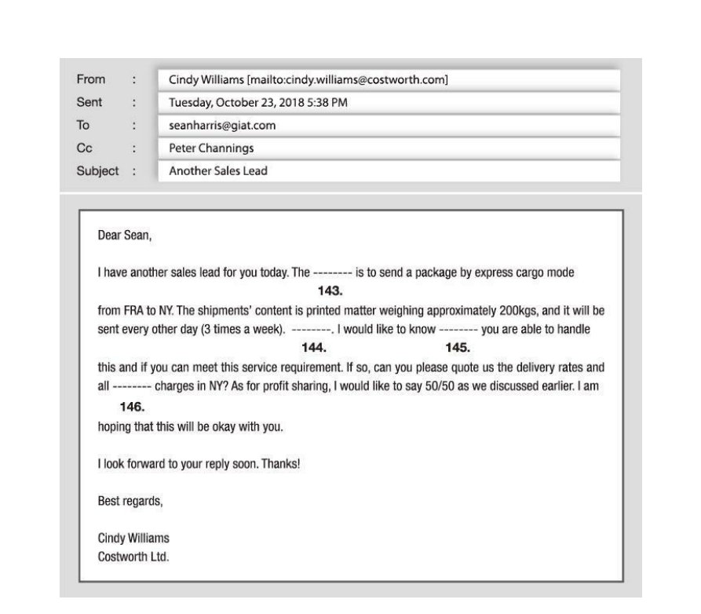
Test 03 · Q157 · Part 7 · ID 257
文字核对：通过；题干 PDF 124–124，答案 PDF 600，解析 PDF 636–636。PDF 124 PDF 600 PDF 636
数据库内容
Who most likely took out this notice?
(A) Mr. Gordon’s family
(B) Michael
(C) A law firm
(D) A bank
正确答案：C
债权人需要和遗嘱执行方——桑金律师事务所取得联系。答案是
(C)。
共用材料 155–158（含原版截图）
Questions 155-158 refer to the following notice.
NOTICE TO CREDITORS
re: the estate of Michael Gordon, formerly of 7 Golden Circus, Victoria,
British Columbia, deceased on the 19th of November.
Notice is hereby given that any further creditors and other claimants against
the said estate should contact the offices of Sankin and Sankin, Solicitors, Suite 9,
432 Wilberforce Road, Victoria, V8W 3R3, the executors of the will of Michael
Gordon, no later than December 22. After that date, we, the executors, will
distribute the estate among the parties entitled to it, taking into consideration only
claims received by the due date.
PDF 123，截图 1

PDF 124，截图 2
Test 03 · Q174 · Part 7 · ID 274
文字核对：通过；题干 PDF 133–134，答案 PDF 600，解析 PDF 651–651。PDF 133 PDF 134 PDF 600 PDF 651
源 PDF 题目截图
数据库内容
What is being asked of those who do not want their bedsheets changed to do?
(A) Call the management staff
(B) Talk to the hotel maid
(C) Leave a do-not-disturb sign on the door
(D) Place the card on the bed
正确答案：D
不需要更换床单的顾客将卡片放在床上即可。答案是(D)。
共用材料 174–175（含原版截图）
Questions 174-175 refer to the following card.
Be Clean, Be Green
Dear Guests,
Each year, many of the major waterways in the world get polluted by vast
amounts of detergents used to wash bed linen and towels in hotels.
In an effort to help preserve the environment, we’d like to ask all of our
guests to please leave the towels that you intend to re-use on the towel rack and
place those towels you want exchanged in the bathtub.
May we also ask that you leave this card on the bed if you do not require
your bed linens changed?
We’d like to thank you for your cooperation in helping to improve our
environment.
The Management
PDF 133，截图 1
Test 03 · Q175 · Part 7 · ID 275
文字核对：通过；题干 PDF 134–134，答案 PDF 600，解析 PDF 652–652。PDF 134 PDF 600 PDF 652
源 PDF 题目截图
数据库内容
What can be inferred about the hotel?
(A) It is trying to do its part to help a good cause.
(B) It is trying to cut down on its cleaning costs.
(C) It is short of cleaning staff.
(D) It only uses environment-friendly products.
正确答案：A
控制清洁剂使用量可减少环境污染。答案是(A)。
共用材料 174–175（含原版截图）
Questions 174-175 refer to the following card.
Be Clean, Be Green
Dear Guests,
Each year, many of the major waterways in the world get polluted by vast
amounts of detergents used to wash bed linen and towels in hotels.
In an effort to help preserve the environment, we’d like to ask all of our
guests to please leave the towels that you intend to re-use on the towel rack and
place those towels you want exchanged in the bathtub.
May we also ask that you leave this card on the bed if you do not require
your bed linens changed?
We’d like to thank you for your cooperation in helping to improve our
environment.
The Management
PDF 133，截图 1
Test 03 · Q176 · Part 7 · ID 276
文字核对：通过；题干 PDF 135–135，答案 PDF 600，解析 PDF 654–654。PDF 135 PDF 600 PDF 654
源 PDF 题目截图
数据库内容
What kind of business is being advertised?
(A) An insurance company
(B) An equipment rental company
(C) A moving company
(D) A web design company
正确答案：C
这是一则有关搬家、打包及储藏业务的宣传广告。答案是(C)。
共用材料 176–180（含原版截图）
Questions 176-180 refer to the following advertisement and letter.
Door2Door Since 1962
A name you can trust
Thinking of relocating? Why not contact Door2Door, the west coast’s
leading specialists in moving, packing, and storage? Since 1962 we’ve been
helping families and businesses start new lives without the stress of worrying
about the safety of their valued possessions. Our secret? Well, it’s simple —
planning and organization, combined with state-of-the-art equipment and packing
materials, and, of course, experienced manpower. We can pack for you, or, if you
prefer to do it yourself, we can offer you advice and the best shock-absorbing
protective packaging materials. Need to ship overseas? We have the contacts and
the experience in Europe and parts of some Asian nations. Storage? We have a
wide range of options! Insurance? No problems. Our insurance is cheap because
we don’t take chances with your precious goods.
Call our advisers now at 888-8888 or 888-9999. Or check out our new
website www.door2door.com for a comprehensive guide to our services. We are
located at 343 Prince Highway, Caulfield South.
Door2Door
343 Prince Highway
Caulfield South 3005
23/08/2018
Dear Door2Door,
I intend to move overseas with my family at the start of next year. Between
us, we have many valuable personal possessions — musical instruments,
computers, audio systems, etc. — which we intend to take with us.
The country where we’ll be living for the next 5 years (I’m taking up an
academic position) is France. We know little about that country and even less
about how to ship goods overseas. I really need to get some good advice soon.
How can I arrange to speak with one of your consultants?
Could you please call me at 934-1134, or email me at
robsted@gomail.com?
Yours sincerely,
Robert Steddon
PDF 134，截图 1

PDF 135，截图 2
Test 03 · Q179 · Part 7 · ID 279
文字核对：通过；题干 PDF 136–136，答案 PDF 600，解析 PDF 655–655。PDF 136 PDF 600 PDF 655
源 PDF 题目截图
数据库内容
What is Mr. Steddon scheduled to do early next year?
(A) Take French lessons
(B) Meet with an overseas client
(C) Work at a consulting firm
(D) Teach in a foreign country
正确答案：D
斯代顿先生移居法国后会从事教学工作。答案是(D)。
共用材料 176–180（含原版截图）
Questions 176-180 refer to the following advertisement and letter.
Door2Door Since 1962
A name you can trust
Thinking of relocating? Why not contact Door2Door, the west coast’s
leading specialists in moving, packing, and storage? Since 1962 we’ve been
helping families and businesses start new lives without the stress of worrying
about the safety of their valued possessions. Our secret? Well, it’s simple —
planning and organization, combined with state-of-the-art equipment and packing
materials, and, of course, experienced manpower. We can pack for you, or, if you
prefer to do it yourself, we can offer you advice and the best shock-absorbing
protective packaging materials. Need to ship overseas? We have the contacts and
the experience in Europe and parts of some Asian nations. Storage? We have a
wide range of options! Insurance? No problems. Our insurance is cheap because
we don’t take chances with your precious goods.
Call our advisers now at 888-8888 or 888-9999. Or check out our new
website www.door2door.com for a comprehensive guide to our services. We are
located at 343 Prince Highway, Caulfield South.
Door2Door
343 Prince Highway
Caulfield South 3005
23/08/2018
Dear Door2Door,
I intend to move overseas with my family at the start of next year. Between
us, we have many valuable personal possessions — musical instruments,
computers, audio systems, etc. — which we intend to take with us.
The country where we’ll be living for the next 5 years (I’m taking up an
academic position) is France. We know little about that country and even less
about how to ship goods overseas. I really need to get some good advice soon.
How can I arrange to speak with one of your consultants?
Could you please call me at 934-1134, or email me at
robsted@gomail.com?
Yours sincerely,
Robert Steddon
PDF 134，截图 1
PDF 135，截图 2
Test 03 · Q194 · Part 7 · ID 294
文字核对：通过；题干 PDF 144–144，答案 PDF 600，解析 PDF 669–669。PDF 144 PDF 600 PDF 669
源 PDF 题目截图
数据库内容
What is one purpose of the memo?
(A) To give employees a reminder
(B) To confirm a request for an order
(C) To note an increase in prices
(D) To mention the removal of items from the menu
正确答案：A
一般在备忘录的开头和结尾会叙述写备忘录的目的。此备忘录提醒员
工向顾客推荐菜单上的新品种，并在今天结束营业之前反馈是否有需要订购
的咖啡豆。答案为(A)。
共用材料 191–195（含原版截图）
Questions 191-195 refer to the following advertisement, invoice, and memo.
Caraway Coffee
is having a special sale on coffee beans this week only
We import the finest coffee beans from around the world
We have coffee beans from Hawaii, Indonesia, Ethiopia, Kenya, and 50 other
countries
We specialize in bulk orders for coffee shops, cafés, restaurants, and
supermarkets
Until March 10, take advantage of this offer:
- Buy 5kg of one type of coffee beans and get 1kg for free
- Buy 8kg of one type of coffee beans and get 2kg for free
- Buy 10kg of one type of coffee beans and get 3kg for free
- Buy 15kg of one type of coffee beans and get 6kg for free
This offer applies to all the coffee beans we sell
The free coffee beans will be the same as those purchased
For more information or to place an order, call (908) 253-1726 or
e-mail us at orders@carawaycoffee.com
Caraway Coffee
598 Longshore Drive
Los Angeles, CA 90243
Customer Name: Melrose Coffee Shop (Contact Name: Judith Hearne)
Address: 192 Grissom Street, Pasadena, CA 90394
Phone Number: 232-7336
Order Number: 58533
Order Date: March 5
Delivery Date: March 6
Thank you for your order. Please call us at (908) 253-1726 to report any
problems or to ask any questions.
To: All Staff, Melrose Coffee Shop
From: Judith Hearne
Subject: Coffee Beans
Date: March 10
We received some coffee beans from our supplier three days ago, so please
remember to recommend them to customers who ask what they should try. Point
out the new items on the menu and tell the customers that they ought to give the
beans a chance. We’re already running low on Jamaican Blue Mountain coffee
beans. That item has proved to be very popular. I’m going to order 8kg tomorrow
so that we can receive some free beans. Let me know if we should order any
other beans before we close for the day, please.
PDF 141，截图 1
PDF 142，截图 2

PDF 143，截图 3
Test 03 · Q195 · Part 7 · ID 295
文字核对：通过；题干 PDF 144–144，答案 PDF 600，解析 PDF 669–669。PDF 144 PDF 600 PDF 669
源 PDF 题目截图
数据库内容
Why will the Melrose Coffee Shop NOT get any free coffee beans on its next order?
(A) It does not belong to a special customer program.
(B) The sale period will have already ended.
(C) Customers can only get discounts one time.
(D) The store is not purchasing enough coffee beans.
正确答案：B
3月10日之前葛缕子咖啡店会提供一些优惠活动，而梅尔罗斯咖啡店
在3月11日才会订购咖啡豆。答案为(B)。
共用材料 191–195（含原版截图）
Questions 191-195 refer to the following advertisement, invoice, and memo.
Caraway Coffee
is having a special sale on coffee beans this week only
We import the finest coffee beans from around the world
We have coffee beans from Hawaii, Indonesia, Ethiopia, Kenya, and 50 other
countries
We specialize in bulk orders for coffee shops, cafés, restaurants, and
supermarkets
Until March 10, take advantage of this offer:
- Buy 5kg of one type of coffee beans and get 1kg for free
- Buy 8kg of one type of coffee beans and get 2kg for free
- Buy 10kg of one type of coffee beans and get 3kg for free
- Buy 15kg of one type of coffee beans and get 6kg for free
This offer applies to all the coffee beans we sell
The free coffee beans will be the same as those purchased
For more information or to place an order, call (908) 253-1726 or
e-mail us at orders@carawaycoffee.com
Caraway Coffee
598 Longshore Drive
Los Angeles, CA 90243
Customer Name: Melrose Coffee Shop (Contact Name: Judith Hearne)
Address: 192 Grissom Street, Pasadena, CA 90394
Phone Number: 232-7336
Order Number: 58533
Order Date: March 5
Delivery Date: March 6
Thank you for your order. Please call us at (908) 253-1726 to report any
problems or to ask any questions.
To: All Staff, Melrose Coffee Shop
From: Judith Hearne
Subject: Coffee Beans
Date: March 10
We received some coffee beans from our supplier three days ago, so please
remember to recommend them to customers who ask what they should try. Point
out the new items on the menu and tell the customers that they ought to give the
beans a chance. We’re already running low on Jamaican Blue Mountain coffee
beans. That item has proved to be very popular. I’m going to order 8kg tomorrow
so that we can receive some free beans. Let me know if we should order any
other beans before we close for the day, please.
PDF 141，截图 1
PDF 142，截图 2
PDF 143，截图 3
Test 04 · Q112 · Part 5 · ID 312
文字核对：通过；题干 PDF 151–151，答案 PDF 676，解析 PDF 681–681。PDF 151 PDF 676 PDF 681
源 PDF 题目截图
数据库内容
Allways Engineering has guaranteed that ------- one of its employees will lose his or her job as a result of the merger.
(A) no
(B) not
(C) none
(D) any
正确答案：B
(A)no表示not one，与横线后的one重复。(C)none表示not a
single one (of)，也与one重复。(D)any可与one 连用，但一般用于否定句
和疑问句，且不符合句意。(B)not是副词，一般用于not one of...的常用
结构。答案是(B)。no，not，none的用法容易混淆，要学会正确区分。
Test 04 · Q122 · Part 5 · ID 322
文字核对：通过；题干 PDF 153–153，答案 PDF 676，解析 PDF 687–687。PDF 153 PDF 676 PDF 687
源 PDF 题目截图
数据库内容
We’d like to congratulate our gifted head of personnel, who won a gold medal at the state-wide archery competition ------- over the weekend.
(A) held
(B) holds
(C) holding
(D) was held
正确答案：A
横线处所填单词修饰competition。能够修饰名词的动词词形
只能是现在分词或过去分词。名词和分词之间如果是被动关系，用过去分
词；如果是主动关系，用现在分词。competition(比赛)和hold(举行)之间
是被动关系，因此选择过去分词(A)held。
Test 04 · Q124 · Part 5 · ID 324
文字核对：通过；题干 PDF 154–154，答案 PDF 676，解析 PDF 688–688。PDF 154 PDF 676 PDF 688
源 PDF 题目截图
数据库内容
Any staff members traveling overseas on company business will be ------- for exceeding their expense allowances.
(A) billed
(B) arranged
(C) replaced
(D) produced
正确答案：A
由traveling overseas(海外出差)和exceeding their
expense allowances(超出费用津贴)可判断，答案应该是跟“费用”有关的
动词。主语是any staff members，动词为被动语态。根据句意，最恰当的
是(A)billed。
Test 04 · Q141 · Part 6 · ID 341
文字核对：通过；题干 PDF 159–159，答案 PDF 676，解析 PDF 698–698。PDF 159 PDF 676 PDF 698
源 PDF 题目截图
数据库内容
选择第 141 空的最佳答案。
(A) regarding
(B) alike
(C) near
(D) amid
正确答案：A
按照句意，for further information ______ the prizes应表
示“有关奖金的详细信息”。答案是(A)regarding(有关，关于)。(D)amid
是“在…当中”的意思。regarding的同义词有concerning，about。
共用材料 139–142（含原版截图）
Questions 139-142 refer to the following information.
THE INSTANT PLAYER’S GUIDE
INSTANT GAME INFORMATION
Current and Upcoming Games
The quantity of tickets (139) -------- and/or distributed may vary and (140) -
------- affect the presented prizes.
For further information (141) -------- the prizes, call the OLGC Customer
Excellence Center toll-free at 1-800-755-8959.
(142) --------. The date is printed on the back of the ticket.
PDF 158，截图 1
Test 04 · Q154 · Part 7 · ID 354
文字核对：通过；题干 PDF 165–165，答案 PDF 676，解析 PDF 708–708。PDF 165 PDF 676 PDF 708
源 PDF 题目截图
数据库内容
Who would most likely be interested in attending the event?
(A) Students who are studying to become designers
(B) Homemakers who want to improve the ambience of their homes
(C) Employees of HOME DÉCOR who want some consultations
(D) Shoppers who are looking to save some money
正确答案：B
家居装饰的设计师会向大家介绍怎样把房间装饰得很漂亮。答案是
(B)。
共用材料 154–156（含原版截图）
Questions 154-156 refer to the following information.
Space for living
ASK A DESIGNER AT HOME DÉCOR EVENT
Come and talk to HOME DÉCOR’s design consultants. They’ll answer your
questions about interior designing and give you tips on how to create beautiful
rooms you will love. Brought to you by Space For Living, HOME DÉCOR’s
Design Series.
Join us for this exciting event, and receive a special gift. Tickets are
available at your local HOME DÉCOR store. For further details, visit
HOMEDECOR.com
PDF 164，截图 1

PDF 165，截图 2
Test 04 · Q164 · Part 7 · ID 364
文字核对：通过；题干 PDF 170–170，答案 PDF 676，解析 PDF 716–716。PDF 170 PDF 676 PDF 716
源 PDF 题目截图
数据库内容
Where would one read this notice?
(A) In a newspaper
(B) At the health club
(C) At the swimming pool
(D) In the Dusseldorf Convention Center
正确答案：D
健身中心位于会议中心内。答案是(D)。
共用材料 164–167（含原版截图）
Questions 164-167 refer to the following notice.
Sports and relaxation facilities
If you need to work out or just chill out, you can find exactly what you need
here at the Dusseldorf Convention Center’s Health Club. The health club is
located on the first floor with a great view over the atrium. —[1]— Our weight
room is state of the art and is always supervised (open from 6:00 a.m. to 11:00
p.m. every day). A spa and sauna (mixed gender) is available right next door as
well as a massage room — but please book in advance. Morning and evening
yoga and tai chi classes are also available with our expert teachers. You can also
book a game of squash or try our heated lap pool (6:00 a.m. to 11:00 p.m.). —[2]
—
To get all the benefits of our 5-star facilities, why not try one of our
recreation passes? —[3]— For only $30, you can have unlimited access to our
facilities for an entire week. *A day pass will cost you just $10.
To find out more, call on our knowledgeable concierge. He can tell you how
to arrange a fantastic exercise and relaxation program to suit your schedule. —[4]
—
______________________________________________________________
* Personal trainers and massages are not included in this price. Please call
the reception desk for details. Please note that children under the age of 16 must
be accompanied by an adult.
PDF 169，截图 1

Test 04 · Q172 · Part 7 · ID 372
文字核对：通过；题干 PDF 173–173，答案 PDF 676，解析 PDF 722–722。PDF 173 PDF 676 PDF 722
源 PDF 题目截图
数据库内容
Which of the following is NOT required?
(A) A copy of a resume
(B) A duplicate of a teaching certificate
(C) An introductory letter
(D) A letter of recommendation
正确答案：D
招聘广告的最后一段列出了所需资料。其中没有提到的是(D)。
共用材料 171–173（含原版截图）
Questions 171-173 refer to the following advertisement.
Belgravia Boys’ Grammar School Angelus Boulevard Belgravia 5009
Currently seeking : Assistant Teacher-Librarian
Full-time for Term 2 with the possibility of continuation
Belgravia B.G.S. requires a qualified and experienced teacher-librarian for
its Junior High School. This will be a full-time position for the second term with
the strong possibility of continuing work on one of our campuses. Experienced
and dynamic candidates who possess either a graduate diploma in education
(teacher-librarianship) or a bachelor’s of education (teacher-librarianship) are
encouraged to apply. One of the principal tasks will be to guide students through
the computerized catalog. The successful candidate will also have to train
students in advanced online searching.
Interested applicants are invited to contact the Deputy Principal (Staffing) at
673-2215 should they have any enquiries regarding the position or the school.
Please send your letter of application, with curriculum vitae, police
clearance, and a photocopy of your teaching diploma, in triplicate, by Wednesday,
August 5 to:
The Deputy Principal (Staffing)
Belgravia Boys’ Grammar School
Angelus Boulevard
Belgravia
Victoria 5009
PDF 172，截图 1
PDF 173，截图 2
Test 04 · Q190 · Part 7 · ID 390
文字核对：通过；题干 PDF 183–183，答案 PDF 676，解析 PDF 738–738。PDF 183 PDF 676 PDF 738
源 PDF 题目截图
数据库内容
In the e-mail, the word“cover” in paragraph 2, line 1, is closest in meaning to
(A) take over
(B) pay for
(C) ask about
(D) reserve
正确答案：B
结合整句话的意思可以推断，cover在这里表示“支付”。答案选
(B)。
共用材料 186–190（含原版截图）
Questions 186-190 refer to the following notice, schedule, and e-mail.
National Association of Agricultural Engineering Conference
The National Association of Agricultural Engineering (NAAE) will host its
annual conference at the Cormack Convention Center from July 10-12 in Helena,
Montana. The theme will be“trends in organic farming.” The keynote speech will
be given by Robert Paulson, a Helena farmer who owns the largest organic farm
in the region. Individuals interested in speaking at the conference should contact
organizer Matt Benson at mbenson@naae.org. Be sure to include an abstract of the
talk you wish to give and list your accomplishments as a farmer. The NAAE can
assist with transportation to Helena and accommodations in the city. Contact Jude
Wilson at jwilson@naae.org for help. To register, go to
www.naae.org/conference. NAAE members can register for $50 while
nonmembers must pay $75.
NAAE Conference Schedule for July 10
Cormack Convention Center
• 9:00 A.M. Opening Remarks, Matt Benson
• 9:30 A.M. Keynote Speech,“How Organic Farming Can Benefit Us,”
Manfred Jones
• 10:30 A.M. Seminar,“Natural Fertilizers,” Angela Simmons
• Noon Lunch (second-floor restaurant)
• 1:00 P.M. Workshop,“Organic Farming Methods,” Gordon Voss
• 2:30 P.M. Roundtable Discussion,“Is Organic Farming Better than
Mechanized Farming?” Dustin Peterson, Wade Verma, Karen Toole
• 4:00 P.M. Speech,“Profiting from Organic Farming,” Devon Sharp
All events will be held in the Yellowstone Room, which is directly across
from Rosewood Auditorium, unless otherwise noted.
To: Wade Verma
From: Matt Benson
Subject: Thank You
Date: July 7
Dear Mr. Verma,
Thank you for agreeing to be a part of the roundtable discussion on such
short notice. Our original keynote speaker had been scheduled to do that;
however, he is unable to attend the conference on account of a personal issue. We
are positive your two decades of experience in organic farming will prove
invaluable to the attendees when you discuss the matter.
While we normally cover the transportation and accommodation costs of our
speakers, since you are a local resident, we will not do so in your case.
However, we would like to offer you a payment of $250 for participating. We
hope this is satisfactory to you.
See you in a few days.
Regards,
Matt Benson
Organizer, NAAE Conference
PDF 180，截图 1

PDF 181，截图 2
PDF 182，截图 3
Test 05 · Q106 · Part 5 · ID 406
文字核对：通过；题干 PDF 191–192，答案 PDF 749，解析 PDF 752–753。PDF 191 PDF 192 PDF 749 PDF 752 PDF 753
源 PDF 题目截图
数据库内容
The minerals boom has brought about an economic boom, which in turn has meant that real estate values have ------- to record levels.
(A) rose
(B) raised
(C) risen
(D) been raising
正确答案：C
本题需正确区分及物动词raise和不及物动词rise。to
record levels (创纪录的水平) 并非宾语，而是表示程度的状语，因此横
线处需填入不及物动词。因横线前有表示现在完成时的have，故选 (C)
risen。
Test 05 · Q113 · Part 5 · ID 413
文字核对：通过；题干 PDF 193–193，答案 PDF 749，解析 PDF 757–757。PDF 193 PDF 749 PDF 757
源 PDF 题目截图
数据库内容
The report by Absolute Consultants advised that at least ------- year will be required before the company can attain profitability.
(A) other
(B) others
(C) another
(D) the other
正确答案：C
横线处需填入修饰单数名词year的限定词。答案是 (C)
another。another 后接名词单数，other后接名词复数。
Test 05 · Q122 · Part 5 · ID 422
文字核对：通过；题干 PDF 195–195，答案 PDF 749，解析 PDF 762–762。PDF 195 PDF 749 PDF 762
源 PDF 题目截图
数据库内容
------- application procedures have resulted in a drop in interest in our investment and other financial services packages.
(A) Complicating
(B) Complicated
(C) Complicates
(D) Complicate
正确答案：B
横线处需要填入修饰主语application procedures的形容
词。答案是 (B) complicated (复杂的) 。
Test 05 · Q126 · Part 5 · ID 426
文字核对：通过；题干 PDF 196–196，答案 PDF 749，解析 PDF 764–764。PDF 196 PDF 749 PDF 764
源 PDF 题目截图
数据库内容
All employees are reminded that there is much satisfaction to be gained from - ------ the community in some voluntary capacity.
(A) serving
(B) deserving
(C) reserving
(D) preserving
正确答案：A
横线处需要填入被in some voluntary capacity修饰、以the
community为宾语的动词，符合句意的是 (A) serving。
Test 05 · Q136 · Part 6 · ID 436
文字核对：通过；题干 PDF 200–200，答案 PDF 749，解析 PDF 770–770。PDF 200 PDF 749 PDF 770
源 PDF 题目截图
数据库内容
选择第 136 空的最佳答案。
(A) decrease
(B) lift
(C) reduction
(D) increase
正确答案：D
本句主要是在说明销售量增长的原因，因此最恰当的是 (D)
increase (增加，增长)。
共用材料 135–138（含原版截图）
Questions 135-138 refer to the following news article.
Thornhill Sales
Increased 124% in June
Trimart’s Housing Report gave Thornhill the number one ranking in sales for
the month of June.
Sales in Thornhill increased by 124%, with 330 sales (135) -------- to a
May tally of 147. This dramatic (136) -------- was the result of the outstanding
success of the Saxton Group’s launch of their new, affordable subdivision Home
Sweet Home.
In its first weekend, Home Sweet Home completely sold out its 152-unit
inventory in the Thornhill area. A more (137) -------- increase of 16% was
recorded in the Toronto region, comprised of North York, East York, Etobicoke,
York, and Central Toronto. (138) --------.
PDF 199，截图 1
Test 05 · Q156 · Part 7 · ID 456
文字核对：通过；题干 PDF 208–208，答案 PDF 749，解析 PDF 786–786。PDF 208 PDF 749 PDF 786
源 PDF 题目截图
数据库内容
What does the sender suggest should be done about the Angle Grinders?
(A) They should be packaged in stronger containers.
(B) They should have a longer warranty period.
(C) They should be taken off the store shelves.
(D) They should be reduced in price.
正确答案：C
卖场负责人提议停止供应并召回已上架的产品。答案是 (C)。
共用材料 155–157（含原版截图）
Questions 155-157 refer to the following letter.
December 1, 2018
Jessica Robinson
25 Miller Road
Sacramento, CA 95852
Dear Ms. Robinson,
We recently received an order of your new model Angle Grinder, which
your salesman advised us to offer as part of our handyman range. —[1]—
Customers have complained to us that the locking ring simply does not work
properly, which causes the disk to fall off.
You can imagine our embarrassment. —[2]— This is truly a dangerous
situation, and we suggest that you stop supplying this item immediately. You
should also issue recall notices. —[3]—
We are returning the entire order. Most of them are still in their boxes. —[4]
— I realize that your power tools are generally of very high quality, so I hope you
sort this problem out quickly for the sake of your reputation.
Please issue us with a credit notice for the entire value of the order.
Yours faithfully,
Paul Richman
Store Manager
PDF 207，截图 1

PDF 208，截图 2
Test 05 · Q161 · Part 7 · ID 461
文字核对：通过；题干 PDF 211–211，答案 PDF 749，解析 PDF 790–790。PDF 211 PDF 749 PDF 790
源 PDF 题目截图
数据库内容
Which movie received the best review?
(A) In the Minotaur’s Maze
(B) Sweat and Blood
(C) Young Hearts in Venice
(D) Red Rain
正确答案：B
评价最高的电影得到了4分。答案是 (B)。
共用材料 161–163（含原版截图）
Questions 161-163 refer to the following movie review.
MOVIES
Ratings out of 5
IN THE MINOTAUR’S MAZE
This movie belongs to a completely new genre perhaps. It’s a historical
horror movie set in ancient Greece, thousands of years ago. Filmed on location in
beautiful Crete, it features beautiful young people from all over Greece being
shipped as sacrifices to the Minotaur. The contrast between the sparkling light of
the Greek islands and the darkness of the mysterious Minotaur’s maze is
stunningly done. A gripping and visually impressive movie. ••• 1/2 Ben King
SWEAT AND BLOOD
This Spanish nonfiction movie set during the Civil War deservedly won the
critics’ prize at last year’s Toronto Film Festival. Filmed in a naturalistic style, it
follows the lives of 4 once-close friends who are separated by the war. Realistic
and dramatic, it paints an all-too-believable picture of a world turned upside-
down by war. Recommended. (English subtitles) •••• Jane Stevenson
YOUNG HEARTS IN VENICE
This is an awful attempt at a“romantic drama.” Young Hearts in Venice tries
to exploit the Venetian setting to give this very ordinary little story a lift but
utterly fails. Two couples intent on a romantic Venetian holiday accidentally
meet. They spend time together and… you guessed it: there are unexpected
chemical reactions. The problem is that the script and acting are so poor that we
couldn’t care less about any of the protagonists! Not recommended. • M.H.
RED RAIN
If you enjoy horror movies where city slickers unintentionally get stuck in
sinister country towns, this movie is for you. Red Rain is a finely crafted effort
from one of the masters of schlock-horror, Jim Middleton. There’s nothing new in
the plot, but the special effects, décor, and script are excellent, and the acting,
mostly by unknowns, is also first-rate. ••• 1/2 Jane Stevenson
PDF 210，截图 1
PDF 211，截图 2
Test 05 · Q170 · Part 7 · ID 470
文字核对：通过；题干 PDF 216–216，答案 PDF 749，解析 PDF 798–798。PDF 216 PDF 749 PDF 798
源 PDF 题目截图
数据库内容
What will most likely happen tomorrow?
(A) Some pictures will be taken.
(B) Material will be printed.
(C) A client will be signed.
(D) A meeting with Mr. Edwards will be held.
正确答案：A
墨菲先生提议给克里斯托夫传媒公司打电话，请一位摄影师明天过来
拍照。答案是 (A)。
共用材料 168–171（含原版截图）
Questions 168-171 refer to the following online chat discussion.
Justine Murphy [1:42 P.M.]
Mr. Edwards informed me that he wants to create a catalog for customers
since we’ve been expanding so much. He wants the first draft by next Monday.
Sue Robinson [1:43 P.M.]
That’s not much time. Did he say what it should look like?
Justine Murphy [1:44 P.M.]
I’ve got a list of requirements. We’d better meet today to review them. We’re
going to need tons of pictures. Suggestions?
George Winters [1:45 P.M.]
Don’t we have some on file? Can’t we use them?
Sue Robinson [1:46 P.M.]
They’re not professional quality. We need something better looking.
Belinda Carter [1:47 P.M.]
We could hire Kristof Media again. The work its photographers did for us
last year was outstanding.
Justine Murphy [1:48 P.M.]
Good thinking. How about calling someone there and asking for a
photographer to come tomorrow? In the meantime, we’re gathering in the
conference room in thirty minutes.
George Winters [1:49 P.M.]
I just wrapped up a meeting at a client’s office.
Justine Murphy [1:50 P.M.]
Then get back as soon as possible. If you miss anything crucial, somebody
can fill you in.
PDF 214，截图 1

PDF 215，截图 2
Test 05 · Q177 · Part 7 · ID 477
文字核对：通过；题干 PDF 220–220，答案 PDF 749，解析 PDF 805–805。PDF 220 PDF 749 PDF 805
源 PDF 题目截图
数据库内容
Which of the following individuals would be most qualified for a position mentioned in the advertisement?
(A) A recent college graduate with a degree in accounting
(B) A sales representative who has two months of experience in his field
(C) A human resources manager with 2 years of experience
(D) A computer programmer with 5 years of hands-on experience
正确答案：D
招聘的职位有财务和销售部门的管理人员、项目经理、网络开发员、
具有两年以上经验的程序员等。符合要求的是 (D)。
共用材料 176–180（含原版截图）
Questions 176-180 refer to the following advertisement and e-mail.
St. George
MEDIA
St. George Media, the publisher of leading consumer media titles including
LIFE IN THE CITY, MOVIE REVIEW, TEEN GOSSIP and BRIDE & GROOM,
is hiring for the following roles:
Sales & Marketing
• Director, Interactive Sales
• Accounting Manager
• Interactive Marketing Manager
• Sales Manager
Web Production
• Project Manager
• Web Developer
• Web Programmer (minimum of 2 years experience)
If you have any questions or are interested in any of the above positions,
please send your resume to jslester@stgeorgemedia.com.
We thank all applicants, however, only those selected for interviews will be
contacted.
From: suziemiller@webstarters.com
To: jslester@stgeorgemedia.com
Date: December 8, 2018
Subject: Another alternative solution
Good morning,
First of all, I want to mention that I am an avid reader of one of your
magazines. The articles in your magazine deal with real issues, and I especially
like reading those columns where the readers write in about their opinions of the
issues covered in your magazine.
The reason for my contacting you this morning is because I think I can be of
some help to you at this time. I came upon your job placement ad while browsing
through your magazine. I immediately called a person I know in your company to
seek more information and realized that you are planning a major facelift of your
company website and are looking for the right people.
I know that the process of putting together a viable web team can be a slow
process. I also know that it can be very costly. I used to manage a web team at my
past company, and we ran into problems we could not anticipate.
Webstarters is a company that was established in 1990 with the purpose of
helping companies like yours set up and maintain websites. We have a team of
experts that understands the balance of technology, design, and content that creates
an effective web presence. Webstarters’ development team combines professional
graphic design, Internet programming expertise, advanced technical skills, and
web site marketing knowledge to create websites that are visually appealing, easy
to navigate, and accomplish your business goals.
I know that your intention is to have your own web team, but do consider
other alternatives like outsourcing to a company like mine. It just might be a wiser
move. Please consider, and call me to arrange a meeting to discuss the
possibilities further. Thank you for your time.
Suzie Miller
President
Webstarters
PDF 218，截图 1
PDF 219，截图 2

PDF 220，截图 3
Test 05 · Q180 · Part 7 · ID 480
文字核对：通过；题干 PDF 221–221，答案 PDF 749，解析 PDF 806–806。PDF 221 PDF 749 PDF 806
源 PDF 题目截图
数据库内容
Which of the following magazines does Ms. Miller most likely read?
(A) LIFE IN THE CITY
(B) TEEN GOSSIP
(C) MOVIE REVIEW
(D) BRIDE & GROOM
正确答案：A
苏西·米勒在邮件中提到自己是圣乔治出版物的忠实读者，根据她的
工作性质，最适合她的杂志是 (A)。
共用材料 176–180（含原版截图）
Questions 176-180 refer to the following advertisement and e-mail.
St. George
MEDIA
St. George Media, the publisher of leading consumer media titles including
LIFE IN THE CITY, MOVIE REVIEW, TEEN GOSSIP and BRIDE & GROOM,
is hiring for the following roles:
Sales & Marketing
• Director, Interactive Sales
• Accounting Manager
• Interactive Marketing Manager
• Sales Manager
Web Production
• Project Manager
• Web Developer
• Web Programmer (minimum of 2 years experience)
If you have any questions or are interested in any of the above positions,
please send your resume to jslester@stgeorgemedia.com.
We thank all applicants, however, only those selected for interviews will be
contacted.
From: suziemiller@webstarters.com
To: jslester@stgeorgemedia.com
Date: December 8, 2018
Subject: Another alternative solution
Good morning,
First of all, I want to mention that I am an avid reader of one of your
magazines. The articles in your magazine deal with real issues, and I especially
like reading those columns where the readers write in about their opinions of the
issues covered in your magazine.
The reason for my contacting you this morning is because I think I can be of
some help to you at this time. I came upon your job placement ad while browsing
through your magazine. I immediately called a person I know in your company to
seek more information and realized that you are planning a major facelift of your
company website and are looking for the right people.
I know that the process of putting together a viable web team can be a slow
process. I also know that it can be very costly. I used to manage a web team at my
past company, and we ran into problems we could not anticipate.
Webstarters is a company that was established in 1990 with the purpose of
helping companies like yours set up and maintain websites. We have a team of
experts that understands the balance of technology, design, and content that creates
an effective web presence. Webstarters’ development team combines professional
graphic design, Internet programming expertise, advanced technical skills, and
web site marketing knowledge to create websites that are visually appealing, easy
to navigate, and accomplish your business goals.
I know that your intention is to have your own web team, but do consider
other alternatives like outsourcing to a company like mine. It just might be a wiser
move. Please consider, and call me to arrange a meeting to discuss the
possibilities further. Thank you for your time.
Suzie Miller
President
Webstarters
PDF 218，截图 1
PDF 219，截图 2
PDF 220，截图 3
Test 05 · Q183 · Part 7 · ID 483
文字核对：通过；题干 PDF 223–223，答案 PDF 749，解析 PDF 809–809。PDF 223 PDF 749 PDF 809
源 PDF 题目截图
数据库内容
What is the purpose of the e-mail?
(A) To provide the names of those who will be attending the workshop
(B) To get permission to be excused from attending the workshop
(C) To seek information about the directions to the hotel
(D) To inform the general manager about a co-worker’s father passing away
正确答案：A
邮件的目的是告知詹姆斯参加培训会的职员名单。答案是 (A)。
共用材料 181–185（含原版截图）
Questions 181-185 refer to the following announcement and memorandum.
New Employee Workshop
It has been a tradition at our company to hold orientation workshops
throughout the year for our new employees. Those who have been with the
company for less than a year are required to attend these workshops.
_________________________________________
Place: Saranton Hotel - Grand Ball Room
Date: November 20–21, 2018
_________________________________________
The purpose of these workshops is to provide the most updated training to
our newest members of our company. During the two days in November, each
participant will get a chance to become acquainted with our executive personnel
as well as each other. Participants will also be exposed to our latest line of
products and will be informed of the company’s vision and goals for the year
2019.
Attendance is mandatory. Those who, for medical or personal reasons,
cannot attend must get permission from their immediate managers. Thank you, and
I look forward to seeing you there.
James Conway
District General Manager
To: James Conway
From: Harry Stewart
Re: New Employee Workshop
Dear James,
You requested that all managers submit the names of their employees who
will be attending the workshop scheduled for November. Here is my list:
John Stack
Mary Fisher
Terry Dillon
Sean Gomez
These four people on my team will be in attendance. As for Lenny Brown,
he has provided written permission to be excused from the orientation. The
reason for his absence is that his grandfather has passed away, so he must make a
trip to his home country to attend the funeral. The situation is unfortunate for his
family but as for the orientation, I think it will be okay. Lenny has been with us
just under a year, and I think he can afford to miss this orientation.
PDF 221，截图 1
PDF 222，截图 2

Test 05 · Q184 · Part 7 · ID 484
文字核对：通过；题干 PDF 223–223，答案 PDF 749，解析 PDF 810–810。PDF 223 PDF 749 PDF 810
源 PDF 题目截图
数据库内容
Who is exempted from attending the workshop?
(A) John Stack
(B) James Conway
(C) Terry Dillon
(D) Lenny Brown
正确答案：D
兰尼·布朗因爷爷过世需要回国，故不能参加这次培训。答案是
(D)。
共用材料 181–185（含原版截图）
Questions 181-185 refer to the following announcement and memorandum.
New Employee Workshop
It has been a tradition at our company to hold orientation workshops
throughout the year for our new employees. Those who have been with the
company for less than a year are required to attend these workshops.
_________________________________________
Place: Saranton Hotel - Grand Ball Room
Date: November 20–21, 2018
_________________________________________
The purpose of these workshops is to provide the most updated training to
our newest members of our company. During the two days in November, each
participant will get a chance to become acquainted with our executive personnel
as well as each other. Participants will also be exposed to our latest line of
products and will be informed of the company’s vision and goals for the year
2019.
Attendance is mandatory. Those who, for medical or personal reasons,
cannot attend must get permission from their immediate managers. Thank you, and
I look forward to seeing you there.
James Conway
District General Manager
To: James Conway
From: Harry Stewart
Re: New Employee Workshop
Dear James,
You requested that all managers submit the names of their employees who
will be attending the workshop scheduled for November. Here is my list:
John Stack
Mary Fisher
Terry Dillon
Sean Gomez
These four people on my team will be in attendance. As for Lenny Brown,
he has provided written permission to be excused from the orientation. The
reason for his absence is that his grandfather has passed away, so he must make a
trip to his home country to attend the funeral. The situation is unfortunate for his
family but as for the orientation, I think it will be okay. Lenny has been with us
just under a year, and I think he can afford to miss this orientation.
PDF 221，截图 1
PDF 222，截图 2
Test 05 · Q186 · Part 7 · ID 486
文字核对：通过；题干 PDF 225–225，答案 PDF 749，解析 PDF 813–813。PDF 225 PDF 749 PDF 813
源 PDF 题目截图
数据库内容
What type of event was most likely NOT held at the festival?
(A) A sale
(B) A running race
(C) A fishing contest
(D) A parade
正确答案：C
第一篇广告中提到，节日的部分活动包括：鲜花展、田径比赛 (B)
、体育活动、工艺美术、拍卖会 (A) 、爱畜动物园、每日游行 (D) 和烟火
表演。故答案为 (C)。
共用材料 186–190（含原版截图）
Questions 186-190 refer to the following advertisement, schedule, and letter.
The Fredericksburg Spring Festival
It’s time once again for the biggest event of the year in Fredericksburg.
This year, the festival will take place from May 1 to 5.
Due to the recent increase in attendees, the festival is being moved to Pine Tree
Park.
Some of this year’s events will include flower displays, athletic contests,
sporting events, arts and crafts, an auction, a petting zoo, and
a daily parade and fireworks show.
There will be numerous concerts by local performers, and the world-famous band
Peter and the Gang will be there, too.
Tickets are $3 per day or $10 for all five days of the event.
Call 584-9373 for more information regarding the schedule, tickets, and parking.
Fredericksburg Spring Festival
Concert Schedule
May 1
This schedule is subject to change. In case of rain, concerts will be moved
to the Fredericksburg Community Center, located across the street from Pine Tree
Park.
May 7
Dear Tina,
I just got back home to Dayton. I really appreciating your inviting me to the
spring festival in your town this year. I had such a great time. I thought I would be
bored going to the festival every single day, but my initial thoughts were incorrect.
Instead, there was something different for us to do on every day of the event. I
really loved watching Greg Powers perform in the community center on the first
day of the festival. That’s something I won’t ever forget.
I hope to be able to attend next year’s festival as well. I’m sure it will be just
as good as this year’s.
Regards,
Susan
PDF 224，截图 1

PDF 225，截图 2
Test 05 · Q190 · Part 7 · ID 490
文字核对：通过；题干 PDF 226–226，答案 PDF 749，解析 PDF 815–815。PDF 226 PDF 749 PDF 815
源 PDF 题目截图
数据库内容
What is suggested about the first day of the spring festival?
(A) An attendance record was set.
(B) The weather was rainy.
(C) Some sporting events were held.
(D) A few performances were canceled.
正确答案：B
由第二篇日程安排表格下方的内容可知，如遇下雨天气，演唱会将改
在位于松树公园街对面的弗雷德里克斯堡社区中心举行。在第三篇的信中我
们得知，格雷格·鲍尔斯是节日第一天在社区中心进行演出的，所以那天一
定是下雨了。故选择 (B)。
共用材料 186–190（含原版截图）
Questions 186-190 refer to the following advertisement, schedule, and letter.
The Fredericksburg Spring Festival
It’s time once again for the biggest event of the year in Fredericksburg.
This year, the festival will take place from May 1 to 5.
Due to the recent increase in attendees, the festival is being moved to Pine Tree
Park.
Some of this year’s events will include flower displays, athletic contests,
sporting events, arts and crafts, an auction, a petting zoo, and
a daily parade and fireworks show.
There will be numerous concerts by local performers, and the world-famous band
Peter and the Gang will be there, too.
Tickets are $3 per day or $10 for all five days of the event.
Call 584-9373 for more information regarding the schedule, tickets, and parking.
Fredericksburg Spring Festival
Concert Schedule
May 1
This schedule is subject to change. In case of rain, concerts will be moved
to the Fredericksburg Community Center, located across the street from Pine Tree
Park.
May 7
Dear Tina,
I just got back home to Dayton. I really appreciating your inviting me to the
spring festival in your town this year. I had such a great time. I thought I would be
bored going to the festival every single day, but my initial thoughts were incorrect.
Instead, there was something different for us to do on every day of the event. I
really loved watching Greg Powers perform in the community center on the first
day of the festival. That’s something I won’t ever forget.
I hope to be able to attend next year’s festival as well. I’m sure it will be just
as good as this year’s.
Regards,
Susan
PDF 224，截图 1
PDF 225，截图 2
Test 05 · Q197 · Part 7 · ID 497
文字核对：通过；题干 PDF 232–232，答案 PDF 749，解析 PDF 823–823。PDF 232 PDF 749 PDF 823
源 PDF 题目截图
数据库内容
What is true about the Crompton, Inc. research center?
(A) It has space for more than 200 workers.
(B) It will be in Hathaway Business Park.
(C) It is scheduled to open in May.
(D) Its employees will be from several countries.
正确答案：B
由第一篇文章可知，康普顿公司将在菲尔德贝格的哈萨韦商业园区开
办新的机构，由第二段的官网新闻可知，康普顿公司要在菲尔德贝格开办的
是一家研究机构，故选项 (B) 正确。
共用材料 196–200（含原版截图）
Questions 196-200 rrefer to the following article, information, and e-mail.
Crompton Semiconductors Coming to City
Feldberg (August 9) – Global semiconductor giant Crompton, Inc. will open
its newest facility in Feldberg next March. On August 8, a Crompton
spokesperson announced that management had selected Feldberg from among
eight potential sites.
The spokesperson commented on several reasons Feldberg was selected.
Most notable among them was the fact that Feldberg is constructing an area called
Hathaway Business Park on the city’s eastern edges. It will be completed in
December of this year, and several companies have already committed to opening
offices and other facilities there.
In addition, the highly educated workforce in the city was singled out for
being an attractive feature. The low cost of living and pleasant climate were also
mentioned.
http://www.cromptonsemiconductors.com
Crompton, Inc. is opening a research facility in the city of Feldberg. More
than 70 full-time and 100 part-time positions still must be filled there. There are a
wide variety of positions available. All of them require a bachelor or master
degree in mathematics, computer science, engineering, or physics. For a complete
listing of the jobs and their requirements, click here. The average salary of the
remaining jobs available is $96,500. Relocation assistance will be provided by
the company.
Crompton, Inc. is the country’s largest manufacturer of semiconductors. It
has facilities in 22 states as well as in Australia, England, France, Russia, and
Turkey. More information about Crompton, Inc. can be obtained here.
To: Laurel Flannagan
From: Fred Sweitzer
Subject: Congratulations
Date: January 11
Laurel,
I was reading a list of the individuals who have been hired at the facility set
to open in March. I was pleasantly surprised to see your name on it. It will be a
pleasure to work with you once again. While I’ve spent the past five years in the
San Diego office, I’ve been named the head of the R&D Department, so it looks
like we’ll be seeing a lot of each other.
I noticed on your application that you worked at Gerona, Inc. for three years.
I’m sure you must have acquired some impressive skills there. Hopefully, you can
put them to good use on a few of research projects we’re going to be involved in.
I’m looking forward to seeing you again on the second of March.
Sincerely,
Fred Sweitzer
PDF 230，截图 1

PDF 231，截图 2

PDF 232，截图 3
Test 06 · Q103 · Part 5 · ID 503
文字核对：通过；题干 PDF 235–235，答案 PDF 827，解析 PDF 828–828。PDF 235 PDF 827 PDF 828
源 PDF 题目截图
数据库内容
It is becoming apparent that all medium to large businesses will seek to ------- their operations by reducing the number of middle managers.
(A) streamline
(B) streamlines
(C) streamlined
(D) streamlining
正确答案：A
seek 可以接不定式作宾语，因此横线处应填入动词原形 (A)
streamline (使有效率；使增产节约)。
Test 06 · Q157 · Part 7 · ID 557
文字核对：通过；题干 PDF 253–253，答案 PDF 827，解析 PDF 864–864。PDF 253 PDF 827 PDF 864
源 PDF 题目截图
数据库内容
Who most likely is Mr. Harmon?
(A) A customer
(B) An inspector
(C) A supervisor
(D) An intern
正确答案：C
哈蒙先生一直在询问准备工作的进展并做统筹安排，还说大约20分钟
后会来检查，可见他应该是餐厅的管理者。答案是 (C)。
共用材料 156–159（含原版截图）
Questions 156-159 refer to the following online chat discussion.
Grant Harmon [9:35 P.M.]
Hey, everyone. Do you remember the inspector is coming tomorrow? How
are the preparations going?
Gus Menino [9:36 P.M.]
I’ve cleaned the kitchen floor but haven’t gotten around to the ovens yet. I
could use some assistance.
Yolanda Russel [9:37 P.M.]
I’ve been busy making sure the dining area looks fine.
Grant Harmon [9:39 P.M.]
Good work, you two. Peter, how about assisting Gus?
Peter Swift [9:40 P.M.]
Actually, I’ve already gone home for the day. I worked the day shift and left
at five. You don’t want me to go back to work, do you?
Grant Harmon [9:41 P.M.]
I wasn’t aware of that, Peter. Don’t worry about it. Gus, who else is there
that can help?
Gus Menino [9:42 P.M.]
Mary and Carter haven’t left yet.
Grant Harmon [9:43 P.M.]
Tell them both lend you a hand. I’ll be there in about twenty minutes to check
everything out. If the place looks good, you can all go home for the day.
PDF 252，截图 1

Test 06 · Q169 · Part 7 · ID 569
文字核对：通过；题干 PDF 258–258，答案 PDF 827，解析 PDF 874–874。PDF 258 PDF 827 PDF 874
源 PDF 题目截图
数据库内容
What should Mr. White do if he wishes to have his bill sent to a new location?
(A) Write a letter to the New Jersey office
(B) Call the toll free number
(C) E-mail the account manager
(D) Visit the nearest American Bank
正确答案：B
查看最下方的注意事项可知，可打客服电话或者登录银行网站变更收
信地址。答案是 (B)。
共用材料 166–169（含原版截图）
Questions 166-169 refer to the following document.
PDF 256，截图 1

PDF 257，截图 2
Test 06 · Q197 · Part 7 · ID 597
文字核对：通过；题干 PDF 276–276，答案 PDF 827，解析 PDF 901–901。PDF 276 PDF 827 PDF 901
源 PDF 题目截图
数据库内容
What does Ms. Abernathy want to do?
(A) Be promoted to management
(B) Set up a meeting with Ms. Ng
(C) Take a tour of Sanderson Tech
(D) Introduce one of her coworkers
正确答案：B
第一封信的结尾提到“如果您有时间，我非常愿意和您见一面”。由
此可知，阿伯西内女士想和吴女士见面。答案是 (B)。
共用材料 196–200（含原版截图）
Questions 196-200 refer to the following e-mails and memo.
To: George Tower <gtower@sandersontech.com>
From: Melanie Ng <melanieng@sandersontech.com>
Subject: Clara Abernathy
Date: October 8
Dear Ms. Ng,
My name is Clara Abernathy. A former colleague Greta Huffman, provided
me with your contact information. I’m moving to Dover as my husband is being
transferred there, so she thought I might find work with your firm.
I’m presently employed at HMR, Inc., where I’m responsible for marketing
our products, a wide variety of children’s toys and games. While I realize your
firm is in a different industry, I possess the skills, experience, and desire to learn
about your industry quickly and can become a valuable employee if you give me a
chance.
I have attached my résumé and a list of professional references. I will be in
Dover from October 5 to 10 while my husband and I search for a home. If you
have time then, I would love to meet you in person.
Sincerely,
Clara Abernathy
To: Melanie Ng <melanieng@sandersontech.com>
From: Clara Abernathy <cabernathy@hmr.com>
Subject: Job Opportunity
Date: October 3
George,
Yesterday, I met someone who worked with my old mentor at Crosstown
Consulting. While she has absolutely no experience in aerospace, I think we
should consider hiring her. I believe she’d be perfect for that opening in your
department.
I’m going to be dropping by your office to discuss a different matter at 1:00
P.M., so I’ll bring her résumé and contact information when I arrive. You should
definitely talk to her and see what you think of her for yourself.
Regards,
Melanie
To: All Employees
From: Trudy West
Subject: New Employees
Date: October 28
Next Monday, November 1, we will be joined by three new employees:
Mark Johnson (R&D Department)
Clara Abernathy (Publicity Department)
David Cross (Engineering Department)
They will spend their first day on the job in HR as they learn about the
company and become acquainted with the premises. They will initiate their
regular duties the following day. Please be sure to give them a warm welcome
and to make them feel like welcome members of the Sanderson Tech team
whenever you see them.
PDF 274，截图 1
PDF 275，截图 2

PDF 276，截图 3
Test 07 · Q119 · Part 5 · ID 619
文字核对：通过；题干 PDF 282–283，答案 PDF 904，解析 PDF 914–914。PDF 282 PDF 283 PDF 904 PDF 914
源 PDF 题目截图
数据库内容
All applications for the current positions should be submitted to the personnel section ------- triplicate and in separate envelopes.
(A) by
(B) in
(C) on
(D) to
正确答案：B
triplicate是表示“一式三份，三倍”的名词，一般与介词
in连用后充当状语。in triplicate意为“一式三份”，in duplicate意
为“一式两份”，in quadruplicate意为“一式四份”。
Test 07 · Q128 · Part 5 · ID 628
文字核对：通过；题干 PDF 285–285，答案 PDF 904，解析 PDF 918–918。PDF 285 PDF 904 PDF 918
源 PDF 题目截图
数据库内容
After a highly profitable first six months, the restaurant’s profits for the second half of the year were a great -------.
(A) disappoints
(B) disappointed
(C) disappointing
(D) disappointment
正确答案：D
主系表结构中，名词和形容词可作表语，表语一般说明主语
的身份、特征、属性或状态。在本题中，主语是the restaurant’s
profits，横线前有冠词和形容词 (a great)，因此最恰当的是 (D)
disappointment。
Test 07 · Q142 · Part 6 · ID 642
文字核对：通过；题干 PDF 289–290，答案 PDF 904，解析 PDF 928–928。PDF 289 PDF 290 PDF 904 PDF 928
源 PDF 题目截图
数据库内容
选择第 142 空的最佳答案。
(A) The audience could well understand clichés in the movie.
(B) The movie was about Canada’s two official cultures clash.
(C) It was a movie that boasted wonderful performances of its actors.
(D) The plot was too obvious to receive a good rating.
正确答案：D
上句描写作者对电影的消极评价，下句也应描写作者对电影的消极评
价，因此选项 (D)“情节太过平淡无奇，因此不能获得好评”意思符合，故
为正确答案。
共用材料 139–142（含原版截图）
Questions 139-142 refer to the following review.
AT THE MOVIES
Reviews by Elisa Reigns
Ratings out of 5
STRAIGHT COP CROOKED COP
Canada’s two official cultures clash (139) -------- an uptight, by-the-book
police officer (Jerry Kirkland) from Vancouver hooks up with a rule-breaking
street cop from Quebec (Bruce Huard) for a drug-related murder investigation.
The chemistry (140) -------- the lead actors is good, but the outdated Canadian
clichés displayed throughout the movie sometimes were a bit too much for the
audience. The story line begins (141) -------- but starts to lag on toward the latter
half of the movie. (142) --------. •• Elisa Reigns
PDF 288，截图 1
PDF 289，截图 2
Test 07 · Q150 · Part 7 · ID 650
文字核对：通过；题干 PDF 293–293，答案 PDF 904，解析 PDF 934–934。PDF 293 PDF 904 PDF 934
源 PDF 题目截图
数据库内容
According to the report, what will likely strike the economy the hardest if the price of oil hits the $80 per barrel mark?
(A) The tourism industry
(B) Consumer spending
(C) Airlines
(D) Gas stations
正确答案：B
文中指出，如果油价达到80美元，消费者的燃料负担会加重，致使能
源消费量减少，而这是对经济的最大影响。答案是 (B)。
共用材料 149–151（含原版截图）
Questions 149-151 refer to the following news report.
Oil prices hit an all time high of $75 per barrel. With the current situation
and at the rate it is going up, it may hit $80 per barrel. With an all-time record
high, the new price has raised the eyebrows of economists, who say some direct
and indirect negative effects from the new price on major sectors will be
inevitable. —[1]— Some troubled airlines struggling to maintain their fleets,
have announced that they cannot cover their fuel costs if oil prices hit $80 per
barrel. —[2]— Travel agents are eagerly expecting a drop in oil prices to boost
the tourism industry to get more people in their vehicles driving around the
country. What is yet to cause the most impact on the economy is the negative
discretionary spending by consumers on energy. —[3]— As people are reluctant
to pay more for energy, they are pressured to cut costs. Economists are concerned
that the economy needs a boost rather than this phenomenon. —[4]—
PDF 292，截图 1

PDF 293，截图 2
Test 07 · Q151 · Part 7 · ID 651
文字核对：通过；题干 PDF 293–294，答案 PDF 904，解析 PDF 935–935。PDF 293 PDF 294 PDF 904 PDF 935
源 PDF 题目截图
数据库内容
In which of the positions marked [1], [2], [3], and [4] does the following sentence best belong? “Adding to that, the domestic travel industry is being hit by the all-time high oil price.”
(A) [1]
(B) [2]
(C) [3]
(D) [4]
正确答案：B
所给句子是说“不仅如此，国内旅游业也正经受着这个空前高油价的
打击”，是在讲高油价对国内旅游业的不利影响。[2]处后面一句说旅行社
急切盼望油价降低，以推动国内旅游的发展。前后意思衔接得当，故答案为
(B)。
共用材料 149–151（含原版截图）
Questions 149-151 refer to the following news report.
Oil prices hit an all time high of $75 per barrel. With the current situation
and at the rate it is going up, it may hit $80 per barrel. With an all-time record
high, the new price has raised the eyebrows of economists, who say some direct
and indirect negative effects from the new price on major sectors will be
inevitable. —[1]— Some troubled airlines struggling to maintain their fleets,
have announced that they cannot cover their fuel costs if oil prices hit $80 per
barrel. —[2]— Travel agents are eagerly expecting a drop in oil prices to boost
the tourism industry to get more people in their vehicles driving around the
country. What is yet to cause the most impact on the economy is the negative
discretionary spending by consumers on energy. —[3]— As people are reluctant
to pay more for energy, they are pressured to cut costs. Economists are concerned
that the economy needs a boost rather than this phenomenon. —[4]—
PDF 292，截图 1
PDF 293，截图 2
Test 07 · Q154 · Part 7 · ID 654
文字核对：通过；题干 PDF 295–295，答案 PDF 904，解析 PDF 938–938。PDF 295 PDF 904 PDF 938
源 PDF 题目截图
数据库内容
What does Mr. Steele recommend Ms. Altman to do?
(A) Emphasize her job experience
(B) Answer questions fully
(C) Conduct research on a company
(D) Apply for a better position
正确答案：C
斯蒂尔先生给奥尔特曼女士的第二条建议就是调查一下这家公司。答
案是 (C)。
共用材料 152–155（含原版截图）
Questions 152-155 refer to the following online chat discussion.
Judith Altman [11:14 A.M.]
I’m somewhat concerned about my interview with RT Media tomorrow.
Does anyone have some pointers for me?
Edward Steele [11:15 A.M.]
Make sure you dress well. If you aren’t wearing formal attire, you definitely
won’t get the job.
Alicia Fields [11:16 A.M.]
Ed’s definitely correct about that.
Judith Altman [11:17 A.M.]
Thanks. I hadn’t considered that. I’d better go to the department store later
today.
Alicia Fields [11:18 A.M.]
I can accompany you if you’d like.
Edward Steele [11:19 A.M.]
You should also do some research on the company. That way, you can ask
intelligent questions of your own. That will make it appear as though you’re very
interested in the position.
Judith Altman [11:20 A.M.]
Thanks, Alicia. That sounds great. I’ll be heading out around five.
Judith Altman [11:21 A.M.]
That’s another good tip, Ed. I’ll be sure to come up with a few things to ask.
Alicia Fields [11:23 A.M.]
And definitely answer their questions fully and expand on your experience in
the industry. Let them know what you’ve done and what you can do for them.
PDF 294，截图 1
PDF 295，截图 2
Test 07 · Q167 · Part 7 · ID 667
文字核对：通过；题干 PDF 302–302，答案 PDF 904，解析 PDF 949–949。PDF 302 PDF 904 PDF 949
源 PDF 题目截图
数据库内容
What is scheduled to happen following the president’s address?
(A) Participants will enjoy some Chinese cuisine.
(B) The attendees will listen to an opening speech by Jack Thornton.
(C) New employees will participate in group activities.
(D) Staff members will check the list by the front entrance.
正确答案：A
CEO的演讲过后，在中餐厅享用午餐。答案是 (A)。
共用材料 167–168（含原版截图）
Questions 167-168 refer to the following information.
Straton Life Assurance
New Employee Training
Theme: New Beginnings, New Challenges
* Please do not forget to write a report to be submitted to your managers
when you return to your branch offices.
PDF 301，截图 1
Test 07 · Q186 · Part 7 · ID 686
文字核对：通过；题干 PDF 312–313，答案 PDF 904，解析 PDF 966–966。PDF 312 PDF 313 PDF 904 PDF 966
源 PDF 题目截图
数据库内容
What is NOT mentioned about Camden Grounds?
(A) People stay there for personal and business reasons.
(B) There are several buildings at the facility.
(C) It is possible to learn to ride a horse there.
(D) The resort is located near some mountains.
正确答案：C
卡姆登广场的设施中包括一个室内游泳池、一个温泉浴场和一个马
厩。客人可以在森林小径中徒步旅行，还可以爬山、游泳、骑马。但并没提
到人们可能在那里学会骑马。答案为 (C)。
共用材料 186–190（含原版截图）
Questions 186-190 refer to the following brochure, article, and review.
Camden Grounds is a resort in the Shenandoah Valley within sight of the
scenic Blue Ridge Mountains. Located approximately twenty kilometers from
Roanoke, Camden Grounds is in a secluded region and occupies more than 120
acres of land. The main building has 42 rooms for guests to stay in along with a
four-star restaurant. Other buildings contain various facilities, including an
indoor swimming pool, a spa, and a stable for horses. Guests can go hiking on the
trails in the forests, climb mountains, swim, and ride horses. Camden Grounds is
popular as a getaway site for families, and companies frequently take advantage
of its conference rooms and high-tech facilities to host negotiations, seminars,
and workshops here. For more information or to make a booking, contact Philip
Busch at pbusch@camdengrounds.com.
http://www.harpermanufacturing.com
August 21 – Two days ago, the sales team returned from its annual trip to
Camden Grounds, where everyone can do some bonding with colleagues in the
beautiful Shenandoah Valley. This year, Christine Felt organized the trip.“While
I’ve visited Camden Grounds before, this was my first time to arrange everything
for the trip. Fortunately, the contact person there did a great job and helped us
have a wonderful time.”
During the three-day trip there, staffers rode on horses and participated in
other outdoor activities. It wasn’t all fun and games though as they attended
several workshops and listened to lectures by guest speakers.
http://www.camdengrounds.com
I visited Camden Grounds for the first time with my colleagues from Harper
Manufacturing two weeks ago. I had heard many positive remarks about it from
them, and it turns out that they hadn’t been exaggerating. Visiting Camden
Grounds was a truly amazing experience. I particularly enjoyed the hikes, the spa,
and the food at the restaurant. The only drawback was that the prices were
somewhat out of my range. My company paid for everything, so I didn’t have to
worry about the cost of this trip, but I doubt I can afford to stay there on my own
in the future.
- Marybeth Simmons
PDF 311，截图 1

PDF 312，截图 2
Test 07 · Q196 · Part 7 · ID 696
文字核对：通过；题干 PDF 318–318，答案 PDF 904，解析 PDF 975–975。PDF 318 PDF 904 PDF 975
源 PDF 题目截图
数据库内容
What is indicated about Friends of Westborough?
(A) It was established by Ms. Schmidt.
(B) It holds a fundraiser every year.
(C) Its headquarters are at Pecan Lake Park.
(D) It is holding a membership drive.
正确答案：B
威斯特伯鲁友爱之家正在举行该市第8届年度糕饼义卖活动。根据
Annual可知答案为 (B)。
共用材料 196–200（含原版截图）
Questions 196-200 refer to the following flyer, e-mail, and notice.
Friends of Westborough
is holding its
8th Annual Bake Sale
Saturday, May 25
10:00 A.M. – 5:00 P.M.
Pecan Lake Park
We need donors and volunteers.
Every year, we sell homemade cakes, cookies, donuts, and other pastries
donated by local residents and businesses.
We require volunteers to set up, to process sales, and to clean up.
Please only volunteer if you can work for at least 4 hours.
Call event organizer Patty Schmidt at 376-4487 or e-mail her at patty@fow.org
to discuss how you can contribute.
All money earned from this event will pay for projects that benefit Westborough.
To: patty@fow.org
From: christinaheard@privatemail.com
Subject: Hello
Date: May 17
Dear Ms. Schmidt,
I noticed the flyer for your organization at the local supermarket. As a new
resident of this community, I haven’t been able to lend a helping hand to anyone
yet, so this would be a great opportunity for me to do so. I’m available on the
25th and can do whatever work you assign me. I also plan to bring two dozen of
my homemade chocolate chip cookies. Should I bring them to the event before it
starts, or should I just show up with them at whatever time you assign me to
work? You can call me at 847-8425 to cover the matter in more detail.
Regards,
Christina Heard
NOTICE TO VOLUNTEERS
Upon arriving at Pecan Lake Park, go to the west gate to pick up a name tag.
If you are donating anything for the bake sale, you should also go to McClain
Fountain and speak with Jodie Wellman. Be sure you wear your name tag the
entire time you are working.
Confirm your duties with Patty Schmidt and then head to the place where
you have been assigned.
If you must leave early for some reason, please speak with Ms. Schmidt
before departing so that a replacement can be found.
There will be bottled water and refreshments available at McClain
Fountain. Should you require a break, notify the head of your team at once.
Thank you very much for your assistance. We hope this year’s bake sale is
the most successful one ever.
PDF 316，截图 1
PDF 317，截图 2

PDF 318，截图 3
Test 07 · Q197 · Part 7 · ID 697
文字核对：通过；题干 PDF 318–318，答案 PDF 904，解析 PDF 975–975。PDF 318 PDF 904 PDF 975
源 PDF 题目截图
数据库内容
According to the flyer, what are people asked to do?
(A) Donate money to the group
(B) Post flyers all around the city
(C) Invite their friends to the event
(D) Contribute foodstuffs they made
正确答案：D
每年，该机构都售卖由当地居民和企业捐赠的自制蛋糕、曲奇饼干、
甜甜圈和其他糕点。答案为 (D)。
共用材料 196–200（含原版截图）
Questions 196-200 refer to the following flyer, e-mail, and notice.
Friends of Westborough
is holding its
8th Annual Bake Sale
Saturday, May 25
10:00 A.M. – 5:00 P.M.
Pecan Lake Park
We need donors and volunteers.
Every year, we sell homemade cakes, cookies, donuts, and other pastries
donated by local residents and businesses.
We require volunteers to set up, to process sales, and to clean up.
Please only volunteer if you can work for at least 4 hours.
Call event organizer Patty Schmidt at 376-4487 or e-mail her at patty@fow.org
to discuss how you can contribute.
All money earned from this event will pay for projects that benefit Westborough.
To: patty@fow.org
From: christinaheard@privatemail.com
Subject: Hello
Date: May 17
Dear Ms. Schmidt,
I noticed the flyer for your organization at the local supermarket. As a new
resident of this community, I haven’t been able to lend a helping hand to anyone
yet, so this would be a great opportunity for me to do so. I’m available on the
25th and can do whatever work you assign me. I also plan to bring two dozen of
my homemade chocolate chip cookies. Should I bring them to the event before it
starts, or should I just show up with them at whatever time you assign me to
work? You can call me at 847-8425 to cover the matter in more detail.
Regards,
Christina Heard
NOTICE TO VOLUNTEERS
Upon arriving at Pecan Lake Park, go to the west gate to pick up a name tag.
If you are donating anything for the bake sale, you should also go to McClain
Fountain and speak with Jodie Wellman. Be sure you wear your name tag the
entire time you are working.
Confirm your duties with Patty Schmidt and then head to the place where
you have been assigned.
If you must leave early for some reason, please speak with Ms. Schmidt
before departing so that a replacement can be found.
There will be bottled water and refreshments available at McClain
Fountain. Should you require a break, notify the head of your team at once.
Thank you very much for your assistance. We hope this year’s bake sale is
the most successful one ever.
PDF 316，截图 1
PDF 317，截图 2
PDF 318，截图 3
Test 08 · Q103 · Part 5 · ID 703
文字核对：通过；题干 PDF 321–321，答案 PDF 979，解析 PDF 980–980。PDF 321 PDF 979 PDF 980
源 PDF 题目截图
数据库内容
The prices charged by your Accounting Department do not match those ------- to me by your Sales Department at the time of purchase.
(A) repeated
(B) informed
(C) recorded
(D) quoted
正确答案：D
those指代的是prices，“购买时销售部给我的报价”的句意
最恰当，故选 (D) quoted。quote有“引用，摘引”的词义，但在托业中一
般表示“报价，开价，出价”。
Test 08 · Q114 · Part 5 · ID 714
文字核对：通过；题干 PDF 323–323，答案 PDF 979，解析 PDF 987–987。PDF 323 PDF 979 PDF 987
源 PDF 题目截图
数据库内容
The weekend program of special activities for handicapped children was a great success thanks to those who generously ------- their time.
(A) voluntary
(B) volunteer
(C) voluntarily
(D) volunteered
正确答案：D
who generously ______ their time是定语从句，修饰
those，横线处应填入以their time为宾语的动词。本句时态为过去时，故
选 (D) volunteered。volunteer one’s time表示“自愿花时间做某
事”。
Test 08 · Q119 · Part 5 · ID 719
文字核对：通过；题干 PDF 324–325，答案 PDF 979，解析 PDF 989–989。PDF 324 PDF 325 PDF 979 PDF 989
源 PDF 题目截图
数据库内容
We would like to thank all of our sponsors for their generous donations, and we hope to have your ------- support in the future.
(A) connected
(B) consecutive
(C) continued
(D) ceaseless
正确答案：C
句意应为“希望未来能继续得到…”，故选 (C)
continued。(D) ceaseless (不停的，无休止的) 指不中断的连续状态，不
适合在这种语境下使用。
Test 08 · Q129 · Part 5 · ID 729
文字核对：通过；题干 PDF 327–327，答案 PDF 979，解析 PDF 996–996。PDF 327 PDF 979 PDF 996
源 PDF 题目截图
数据库内容
Unfortunately, several patients at the hospital have been struck by a disease for ------- there is no known cure.
(A) while
(B) whose
(C) which
(D) that
正确答案：C
for ______ there is no known cure修饰disease，因此横
线处应填入关系代词。答案是 (C) which。(D) that引导定语从句时前面不
能有介词。
Test 08 · Q133 · Part 6 · ID 733
文字核对：通过；题干 PDF 329–329，答案 PDF 979，解析 PDF 998–998。PDF 329 PDF 979 PDF 998
源 PDF 题目截图
数据库内容
选择第 133 空的最佳答案。
(A) principle
(B) value
(C) law
(D) criteria
正确答案：D
横线处所填单词被listed above (以上列出的) 修饰，作meet (满
足) 的宾语。最符合句意的是 (D) criteria (标准)。
共用材料 131–134（含原版截图）
Questions 131-134 refer to the following instructions.
Emergency Evacuation Functions
(131) -------- an emergency situation arises, the persons seated near the exits
might be called upon to perform the following tasks:
1. Identify, locate, and operate the mechanisms to open the emergency exits.
2. Assess the situation quickly, and make a decision to see if opening the
door would expose the passengers to any hazards.
3. Fasten the emergency exit door to the hinge to ensure a safe flow of
departure for the passengers.
4. As the exit doors are unlocked, the inflatable slide will automatically be
deployed to the ground below. The diagrams posted next to the exit doors
illustrate this procedure. Alert the other passengers once the slide has been fully
(132) --------. Exit first to make sure that the situation is safe outside. Once safety
has been confirmed, guide the others out of the plane by helping them from the
bottom of the slide.
If your seating allocation is by the exit doors, but you feel that you can’t meet
the (133) -------- listed above, or you simply wish not to take on the
responsibility, please tell one of the flight attendants before take off. (134) -------
-.
PDF 328，截图 1
Test 08 · Q134 · Part 6 · ID 734
文字核对：通过；题干 PDF 329–329，答案 PDF 979，解析 PDF 998–998。PDF 329 PDF 979 PDF 998
源 PDF 题目截图
数据库内容
选择第 134 空的最佳答案。
(A) Stay in your seat in order for the other passengers to exit first.
(B) You will be provided with an alternative seating arrangement.
(C) It is important to know the emergency evacuation functions.
(D) None of the passengers are competent to undertake these tasks.
正确答案：B
横线处位于文章最后，上一句说“如果您的座位…”可知，描述与座
位有关的选项 (B) 能衔接上文，故为正确答案。
共用材料 131–134（含原版截图）
Questions 131-134 refer to the following instructions.
Emergency Evacuation Functions
(131) -------- an emergency situation arises, the persons seated near the exits
might be called upon to perform the following tasks:
1. Identify, locate, and operate the mechanisms to open the emergency exits.
2. Assess the situation quickly, and make a decision to see if opening the
door would expose the passengers to any hazards.
3. Fasten the emergency exit door to the hinge to ensure a safe flow of
departure for the passengers.
4. As the exit doors are unlocked, the inflatable slide will automatically be
deployed to the ground below. The diagrams posted next to the exit doors
illustrate this procedure. Alert the other passengers once the slide has been fully
(132) --------. Exit first to make sure that the situation is safe outside. Once safety
has been confirmed, guide the others out of the plane by helping them from the
bottom of the slide.
If your seating allocation is by the exit doors, but you feel that you can’t meet
the (133) -------- listed above, or you simply wish not to take on the
responsibility, please tell one of the flight attendants before take off. (134) -------
-.
PDF 328，截图 1
Test 08 · Q142 · Part 6 · ID 742
文字核对：通过；题干 PDF 331–331，答案 PDF 979，解析 PDF 1003–1003。PDF 331 PDF 979 PDF 1003
源 PDF 题目截图
数据库内容
选择第 142 空的最佳答案。
(A) Three photographic displays will be hosted at the Dallas Observatory.
(B) Astronomers are most interested in these images.
(C) They display not only technical skill but also capture the beauty of astronomy.
(D) Star gazers are familiar with the beauty of the night sky.
正确答案：C
由上句“届时会有精彩的图片展出”可知，横线处填继续描述图片信
息的内容最合适，故选 (C)。
共用材料 139–142（含原版截图）
Questions 139-142 refer to the following notice.
Star Struck
If you’re not a star gazer, you (139) -------- not be familiar with the beauty
of the night sky. But a display of 2018 Bruce Sullivan Awards (140) --------
photography at the Dallas Observatory has captured the splendor of the stars for
all to see.
Astronomers and photographers were invited to take part in the (141) -------
- awards, organized by the Central East Astronomical Society as part of their
annual AstroFest, held at Hills Arts Center.
The result is a stunning collection of images. (142) --------. Entry is free,
and the display will last until October 15.
PDF 330，截图 1
Test 08 · Q151 · Part 7 · ID 751
文字核对：通过；题干 PDF 335–335，答案 PDF 979，解析 PDF 1010–1010。PDF 335 PDF 979 PDF 1010
源 PDF 题目截图
数据库内容
What does Kent imply might be forthcoming?
(A) A co-worker’s return from retirement
(B) A visit by the senior management staff
(C) An adjustment within the company
(D) A budget cut in the next quarter
正确答案：C
肯特提到公司可能会发生大变动，故选 (C)。
共用材料 149–151（含原版截图）
Questions 149-151 refer to the following facsimile.
Barry,
Here’s a quick status report on the current affairs in the office while you’ve
been gone. I also sent you an email in addition to this fax but wasn’t
sure how much access to email you would have. The major news is the
resignation of George Stewart who left to start his own company. If you recall,
that had been his career dream for a long time.
Our immediate reaction to George’s departure did not include a replacement
hire. As you know, we have been struggling with the possibility of staff layoffs
for the last month in order to cut costs. By reallocating some of the job
responsibilities to the remaining employees, we may be able to save their jobs
and fill the void.
We also had a surprise visit from a few new senior management members
from the head office. I gave them a tour of our office and took them out for a nice
dinner. They didn’t make any company announcements while they were here
(stating they just wanted to see this division). I have a strange feeling that the
future may present some drastic changes for our company.
I’ll keep this short, but I wanted to keep you abreast of what’s going on.
Enjoy the rest of your trip, and say hello to Mary and the kids!
Kent
PDF 334，截图 1

PDF 335，截图 2
Test 08 · Q152 · Part 7 · ID 752
文字核对：通过；题干 PDF 336–336，答案 PDF 979，解析 PDF 1011–1011。PDF 336 PDF 979 PDF 1011
源 PDF 题目截图
数据库内容
The word“omnipotent” in paragraph 2, line 8 is closest in meaning to
(A) strong
(B) all-powerful
(C) unlimited
(D) divine
正确答案：B
omnipotent表示“全能的，有无限权力的，万能的”，在本文中，
omnipotent product指“万能产品”。答案是 (B)。
共用材料 152–154（含原版截图）
Questions 152-154 refer to the following report.
Many people in today’s business world are required to be wired and
digitally equipped at all times, including cell phones, PDAs (personal digital
assistants), and digital cameras, on a daily basis. A simplified system consisting
of fewer of these stand-alone products would strongly benefit many people in all
industries.
The solution may present itself as digital convergence, which refers to the
combination of two or more products simplified into a single product. Many of
today’s cell phones also allow the user to take pictures, surf the net, and
send/receive text messages. There are increasingly newer PDAs combined with
cell phones, with highly functional computing capabilities that work seamlessly
like desktop computers. It is highly probable that one day soon there will be
an“omnipotent” product that can do all these things.
Presently, there are some products that can perform a large number of these
functions, but are accessible to those who can afford to pay a high price.
However, sometime in the near future, a super PDA that can serve all our required
functions and is available at a price that is affordable for the average person may
be a reality.
PDF 335，截图 1
PDF 336，截图 2
Test 08 · Q172 · Part 7 · ID 772
文字核对：通过；题干 PDF 346–346，答案 PDF 979，解析 PDF 1028–1028。PDF 346 PDF 979 PDF 1028
源 PDF 题目截图
数据库内容
Which of the following is NOT mentioned in the reminder?
(A) Everyone should line up to board the bus.
(B) Do not go astray from the group.
(C) Refrain from giving any crackers to the animals.
(D) Keep in mind that the tour could last longer than expected.
正确答案：D
本文列出的5个注意事项中并没有提到 (D)。
共用材料 172–173（含原版截图）
Questions 172-173 refer to the following pamphlet.
Amazing Zoo Tour
Welcome to our Amazing Zoo Tour! In the next three hours, you will see the
highlights that make this zoo the most amazing zoo in all the country. We will be
seeing a lot of animals and covering a lot of ground, so let’s get started with a
short list of reminders:
------------------------------------------------------------------
- Please enter and exit the bus in an orderly fashion.
- Please stay with your tour guide at all times so that no one gets left behind.
- Do not feed any animals, as their regular feeding cycles will be
interrupted.
- Please refrain from touching the animals through the fence and making any
undue noise.
- When riding on the bus, please keep the windows closed and your hands
inside the bus.
------------------------------------------------------------------
For parents of young children: please ensure that they are supervised at all
times. Some animals may appear friendly and cuddly to your child but should be
approached with caution.
By following our rules, you and the rest of the group will enjoy a safe and
happy tour! Please note that those who choose not to follow the above rules may
be asked to leave.
PDF 345，截图 1

PDF 346，截图 2
Test 08 · Q173 · Part 7 · ID 773
文字核对：通过；题干 PDF 346–346，答案 PDF 979，解析 PDF 1028–1028。PDF 346 PDF 979 PDF 1028
源 PDF 题目截图
数据库内容
What is the consequence for those who do not follow the rules?
(A) They may be removed from the group.
(B) They could be put into another group.
(C) They won’t be able to come back for a year.
(D) They will be forced to stay on the bus.
正确答案：A
如果不遵守上述要求，有被强制驱逐的可能。答案是 (A)。
共用材料 172–173（含原版截图）
Questions 172-173 refer to the following pamphlet.
Amazing Zoo Tour
Welcome to our Amazing Zoo Tour! In the next three hours, you will see the
highlights that make this zoo the most amazing zoo in all the country. We will be
seeing a lot of animals and covering a lot of ground, so let’s get started with a
short list of reminders:
------------------------------------------------------------------
- Please enter and exit the bus in an orderly fashion.
- Please stay with your tour guide at all times so that no one gets left behind.
- Do not feed any animals, as their regular feeding cycles will be
interrupted.
- Please refrain from touching the animals through the fence and making any
undue noise.
- When riding on the bus, please keep the windows closed and your hands
inside the bus.
------------------------------------------------------------------
For parents of young children: please ensure that they are supervised at all
times. Some animals may appear friendly and cuddly to your child but should be
approached with caution.
By following our rules, you and the rest of the group will enjoy a safe and
happy tour! Please note that those who choose not to follow the above rules may
be asked to leave.
PDF 345，截图 1
PDF 346，截图 2
Test 09 · Q101 · Part 5 · ID 801
文字核对：通过；题干 PDF 363–363，答案 PDF 1055，解析 PDF 1056–1056。PDF 363 PDF 1055 PDF 1056
源 PDF 题目截图
数据库内容
Mrs. Szubanska has made a great contribution to our company through ------- wide knowledge and practical, down-to-earth approach.
(A) she
(B) hers
(C) herself
(D) her
正确答案：D
备选答案均为同一人称的不同人称代词，因此需要分析横线
前后的具体结构。横线后有名词短语wide knowledge (形容词+名词)，因此
横线处所填代词应和wide一起修饰knowledge。故选形容词性物主代词 (D)
her。
Test 09 · Q108 · Part 5 · ID 808
文字核对：通过；题干 PDF 365–365，答案 PDF 1055，解析 PDF 1059–1059。PDF 365 PDF 1055 PDF 1059
源 PDF 题目截图
数据库内容
Employees wishing to ------- professional congresses or seminars will continue to receive their pay during the time they are absent.
(A) enroll
(B) attend
(C) participate
(D) perform
正确答案：B
(A) 应与介词in连用构成enroll in (登记，招收)；(C) 也
应与介词in连用构成participate in (参加，参与)；(D) 可直接后接宾
语，但不符合句意。“想参加专业会议或研讨会的…”的句意最恰当，故选
(B) attend (参加)。
Test 09 · Q111 · Part 5 · ID 811
文字核对：通过；题干 PDF 365–366，答案 PDF 1055，解析 PDF 1061–1061。PDF 365 PDF 366 PDF 1055 PDF 1061
源 PDF 题目截图
数据库内容
Payment of telephone or Internet orders is ------- within 7 working days of the receipt of the goods and invoice.
(A) due
(B) coming
(C) payable
(D) complete
正确答案：A
句意应为“应在收到货物和发票后7个工作日内付款”，故选
(A) due (应支付的)。
Test 09 · Q121 · Part 5 · ID 821
文字核对：通过；题干 PDF 368–368，答案 PDF 1055，解析 PDF 1067–1067。PDF 368 PDF 1055 PDF 1067
源 PDF 题目截图
数据库内容
Mr. Smith wants you to know that he will be ------- job applicants all day on Thursday, and that all enquiries should be directed to his secretary.
(A) interview
(B) interviews
(C) interviewed
(D) interviewing
正确答案：D
job applicants充当interview的宾语，且横线前有be，故选
(D) interviewing。将来进行时 (will be doing) 用于描述主语确信的、
将来肯定会发生的事情。
Test 09 · Q149 · Part 7 · ID 849
文字核对：通过；题干 PDF 377–378，答案 PDF 1055，解析 PDF 1084–1084。PDF 377 PDF 378 PDF 1055 PDF 1084
源 PDF 题目截图
数据库内容
What is the purpose of the notice?
(A) To announce the promotion of some managers
(B) To invite staff members to the international conference
(C) To request a report on the domestic market
(D) To recruit people interested in participating in a special program
正确答案：D
这个通知是为了招募自愿参加国际交流项目的中层管理者。答案是
(D)。
共用材料 149–151（含原版截图）
Questions 149-151 refer to the following notice.
Opportunity for International Experience
Currently we have four positions open for middle managers who wish to
participate in a six-month, international exchange program. The program will
involve sharing with our counterparts in the respective country best practice
principles learned while on the job here in our head office. During your brief
excursion, you will spend a considerable amount of time learning about the
domestic branches’ markets, with a specific focus on market research in the area
of domestic consumers’ preferences. Afterwards, a comprehensive report of our
research results will be submitted to the head office on your return.
Interested applicants must fill out an application in addition to submitting a
maximum two-page essay on the benefits of participating in an international
exchange and how that experience can add value to the corporation. The deadline
to apply is October 31.
PDF 377，截图 1
Test 09 · Q156 · Part 7 · ID 856
文字核对：通过；题干 PDF 381–381，答案 PDF 1055，解析 PDF 1089–1089。PDF 381 PDF 1055 PDF 1089
源 PDF 题目截图
数据库内容
According to the advertisement, what must consumers do to keep up with the latest trends?
(A) Consult with investment advisors
(B) Enroll in a business course
(C) Take charge and read up on the changes
(D) Get a desktop computer
正确答案：C
在第一段的This means having to do your homework on learning
about the constant, changing...work assignments中可找到答案。答案
是 (C)。
共用材料 155–157（含原版截图）
Questions 155-157 refer to the following advertisement.
Making It Big with only a Dollar a Day!
Now let’s be real. Life is much more complex today compared to the
way things were 50 years ago. —[1]— The introduction of personal computers in
our homes and workplaces and the vast number of investments available in the
market make our lives much more confusing. And with the world changing so fast,
it’s hard to keep up with the latest trends and new investment products that are
made available by our local investment advisors or institutions. —[2]— This
means having to do your homework on learning about the constant, changing,
investment opportunities and instruments on top of doing your daily household
chores and work assignments. Completely overwhelmed and, exhausted, you’re
not alone. Hundreds of people everyday face the same situation as you, but where
do they turn to for help? —[3]—
Now the solution has become much easier with an investment of as
little as 10 minutes and a dollar a day. —[4]— Making It Big with only a Dollar
a Day! can put you on the right path to financial success and happiness. Read it,
and you’ll learn that working is good, but financial success is even better. At
$29.99, you will get your money’s worth. It’s available at any local bookstores
near you.
PDF 380，截图 1
Test 09 · Q183 · Part 7 · ID 883
文字核对：通过；题干 PDF 395–395，答案 PDF 1055，解析 PDF 1114–1114。PDF 395 PDF 1055 PDF 1114
源 PDF 题目截图
数据库内容
On which day will the jacket mentioned in the e-mail become handy?
(A) Day 1
(B) Day 2
(C) Day 3
(D) Day 4
正确答案：B
第一篇文章第二段中提到观看棒球比赛时需要带外套，查看日程表可
知，观看棒球比赛的时间是第二天的晚上7:30。答案是 (B)。
共用材料 181–185（含原版截图）
Questions 181-185 refer to the following e-mail message and itinerary.
To: ALL TRAVELERS
From: lisawilliams@westcoasttravels.com
Subject: May 1-May 5 Tour
To everyone,
The west coast tour has finally arrived. I hope everyone is looking forward
to some great sightseeing we have planned for you. On this West Coast Adventure
Tour, there will be two destinations: LA and Las Vegas.
Since there are 25 members who will be in attendance, we request that each
passenger only bring one bag due to limited space on the bus. The weather is
forecast to be bright, warm, and sunny throughout the entire trip. Remember that
we will be spending a night in Dodgers’ Stadium to watch a baseball game in the
evening. So please remember to pack a jacket since the nights in LA get a bit
cool.
We have many events planned. So please refer to the schedule attached with
this e-mail. If there are any questions regarding the itinerary or anything about our
trip, please call me at my office during business hours. Also, please arrive at
Kennedy Airport at least two hours before the 8 o’clock flight to LA. Thank you
and I look forward to seeing you at the airport on the 1st of May.
Lisa Williams
PDF 393，截图 1

PDF 394，截图 2
Test 09 · Q184 · Part 7 · ID 884
文字核对：通过；题干 PDF 395–395，答案 PDF 1055，解析 PDF 1114–1114。PDF 395 PDF 1055 PDF 1114
源 PDF 题目截图
数据库内容
What does the e-mail imply?
(A) The tour has already taken place.
(B) Too many tourists have misbehaved in the past.
(C) People should prepare themselves for chilly weather.
(D) A group this large has never been put together before.
正确答案：C
参考183题。答案是 (C)。
共用材料 181–185（含原版截图）
Questions 181-185 refer to the following e-mail message and itinerary.
To: ALL TRAVELERS
From: lisawilliams@westcoasttravels.com
Subject: May 1-May 5 Tour
To everyone,
The west coast tour has finally arrived. I hope everyone is looking forward
to some great sightseeing we have planned for you. On this West Coast Adventure
Tour, there will be two destinations: LA and Las Vegas.
Since there are 25 members who will be in attendance, we request that each
passenger only bring one bag due to limited space on the bus. The weather is
forecast to be bright, warm, and sunny throughout the entire trip. Remember that
we will be spending a night in Dodgers’ Stadium to watch a baseball game in the
evening. So please remember to pack a jacket since the nights in LA get a bit
cool.
We have many events planned. So please refer to the schedule attached with
this e-mail. If there are any questions regarding the itinerary or anything about our
trip, please call me at my office during business hours. Also, please arrive at
Kennedy Airport at least two hours before the 8 o’clock flight to LA. Thank you
and I look forward to seeing you at the airport on the 1st of May.
Lisa Williams
PDF 393，截图 1
PDF 394，截图 2
Test 09 · Q191 · Part 7 · ID 891
文字核对：通过；题干 PDF 400–400，答案 PDF 1055，解析 PDF 1122–1122。PDF 400 PDF 1055 PDF 1122
源 PDF 题目截图
数据库内容
What is indicated about the Book Depot?
(A) It is the owner of several bookstores.
(B) It provides membership for free.
(C) It is having a sale for all customers in March.
(D) It delivers books to other countries.
正确答案：D
“书之家”是一家在线售书平台，会员在网上购书，不管下单者在世
界的哪个地方，书籍都可邮寄到家。答案是(D)。
共用材料 191–195（含原版截图）
Questions 191-195 refer to the following e-mail, invoice, and survey.
To: Dennis Shepherd <dennis_shepherd@wondermail.com>
From: Karen Cross <kcross@bookdepot.com>
Subject: Welcome
Date: February 12
Dear Mr. Shepherd,
Payment for your annual membership to the Book Depot has been received.
For the next twelve months, you will get 10% off every purchase you make with
us. You’ll also gain access to special offers exclusively for our members.
The Book Depot has more than 20 million used books for sale at bookstores
around the world. We work with some of the finest used bookstores everywhere
and make their collections available online when you shop with us. After you
place an order, individual bookstores will send the items you want wherever in
the world you are.
As a special bonus, the delivery of each book you purchase will be
completely free until March 15. Finally, should you spend more than $80 on your
first purchase as a new member, you will receive a complimentary grab bag of 10
used books selected at random.
Sincerely,
Karen Cross
INVOICE
Customer Name: Dennis Shepherd
Membership Number: 234952
Address: 78 Mangrove Street, Columbia, SC
Phone Number: (393) 348-2836
E-mail Address: dennis_shepherd@wondermail.com
Order Date: February 18
If ordering from multiple bookstores, your items will be sent separately. You
will receive an e-mail from each bookseller regarding the status of your purchase.
The Book Depot
Customer Survey
Please let us know how you felt about your most recent order. Your
comments will help us improve the customer experience for our members.
How would you rate the following (1 = very unsatisfied / 5 =very satisfied):
Comments: I was mostly satisfied with everything, especially the grab bag
which I received. I was e-mailed about every book I ordered except for
Wandering the Wastelands. Nevertheless, it still arrived, so there were no
problems.
— Dennis Shepherd
PDF 398，截图 1

PDF 399，截图 2

PDF 400，截图 3
Test 10 · Q103 · Part 5 · ID 903
文字核对：通过；题干 PDF 406–406，答案 PDF 1130，解析 PDF 1131–1131。PDF 406 PDF 1130 PDF 1131
源 PDF 题目截图
数据库内容
As you would expect at one of the world’s most reputable hotels, the ------- is prompt, efficient, and discreet.
(A) exertion
(B) decision
(C) challenge
(D) service
正确答案：D
“服务快捷、高效且周到”的句意最恰当。故选 (D)
service。
Test 10 · Q106 · Part 5 · ID 906
文字核对：通过；题干 PDF 406–406，答案 PDF 1130，解析 PDF 1133–1133。PDF 406 PDF 1130 PDF 1133
源 PDF 题目截图
数据库内容
This is an excellent time to consider changing jobs because of the large number of positions ------- available in the mining sector.
(A) commonly
(B) currently
(C) actively
(D) approvingly
正确答案：B
根据this is an excellent time to consider changing
jobs (现在是考虑跳槽的好时机) 判断，之所以是好时机，是因为现有的就
业岗位很多。故选 (B) currently。
Test 10 · Q107 · Part 5 · ID 907
文字核对：通过；题干 PDF 407–407，答案 PDF 1130，解析 PDF 1133–1133。PDF 407 PDF 1130 PDF 1133
源 PDF 题目截图
数据库内容
------- leaving school, she has worked in a variety of positions but has not yet found one which suits her talents or interests.
(A) Despite
(B) Since
(C) In spite
(D) If
正确答案：B
横线前后没有leaving的主语，因此______ leaving school
是主语被省略的分词短语，故横线处应填入引导状语从句的从属连词。句意
应为“自从学校毕业后”，故选 (B) since。since leaving school=since
she left school。
Test 10 · Q122 · Part 5 · ID 922
文字核对：通过；题干 PDF 410–410，答案 PDF 1130，解析 PDF 1141–1141。PDF 410 PDF 1130 PDF 1141
源 PDF 题目截图
数据库内容
While the producer has ------- production of this line, secondhand replacement parts can often be found at specialty stores.
(A) alternate
(B) incomplete
(C) dependent
(D) discontinued
正确答案：D
宾语是production of this line，横线前又有表示现在完成
时的has，因此横线处应填入动词的过去分词。“虽然生产商已经停止生产
这种产品”的句意最恰当，故选 (D) discontinued。
Test 10 · Q136 · Part 6 · ID 936
文字核对：通过；题干 PDF 414–415，答案 PDF 1130，解析 PDF 1149–1149。PDF 414 PDF 415 PDF 1130 PDF 1149
源 PDF 题目截图
数据库内容
选择第 136 空的最佳答案。
(A) reduce
(B) reducing
(C) be reduced
(D) to reduce
正确答案：A
to ______ blood sugar是修饰名词短语dietary approaches的不定
式，因此横线处应填入动词原形 (A) reduce。
共用材料 135–138（含原版截图）
Questions 135-138 refer to the following notice.
ST. VINCENT’S HOSPITAL
Leading with Innovation
Serving with Compassion
Diet & Diabetes Research Study
At St. Vincent’s Hospital in Kansas, we are planning to conduct a six-month
(135) -------- comparing the potential benefits of two dietary approaches to (136)
-------- blood sugar.
Twenty individuals currently taking tablets for diabetes but who have clean
bills of health are (137) -------- in the Kansas area. If you feel that you want to
participate in this study, please get in contact with Dr. Sullivan’s research group
at St. Vincent’s Hospital. (138) --------.
PDF 414，截图 1
Test 10 · Q138 · Part 6 · ID 938
文字核对：通过；题干 PDF 415–415，答案 PDF 1130，解析 PDF 1150–1150。PDF 415 PDF 1130 PDF 1150
源 PDF 题目截图
数据库内容
选择第 138 空的最佳答案。
(A) The number is 755-8989.
(B) The purpose is to reduce blood sugar.
(C) Participants must have clean bills of health.
(D) The study is about diabetes.
正确答案：A
由上句说“如果您愿意……请联系……”可知，横线处应填沙立文医
生研究小组的联系方式，故选 (A)。
共用材料 135–138（含原版截图）
Questions 135-138 refer to the following notice.
ST. VINCENT’S HOSPITAL
Leading with Innovation
Serving with Compassion
Diet & Diabetes Research Study
At St. Vincent’s Hospital in Kansas, we are planning to conduct a six-month
(135) -------- comparing the potential benefits of two dietary approaches to (136)
-------- blood sugar.
Twenty individuals currently taking tablets for diabetes but who have clean
bills of health are (137) -------- in the Kansas area. If you feel that you want to
participate in this study, please get in contact with Dr. Sullivan’s research group
at St. Vincent’s Hospital. (138) --------.
PDF 414，截图 1
Test 10 · Q177 · Part 7 · ID 977
文字核对：通过；题干 PDF 434–434，答案 PDF 1130，解析 PDF 1182–1182。PDF 434 PDF 1130 PDF 1182
源 PDF 题目截图
数据库内容
What will Lloyd do before meeting Belinda today?
(A) Work in his office
(B) Drive around town
(C) Relax at his home
(D) Prepare dinner
正确答案：B
阅读邮件的第一段内容可知，劳埃德今天大多数时间都在去拜访客户
的路上，他与客户的会面结束后，会去接贝琳达。答案是 (B)。
共用材料 176–180（含原版截图）
Questions 176-180 refer to the following e-mail message and e-mail attachment.
To: belindacarlos@onestar.com
From: lloyd@topnet.com
Subject: Movie Schedule ; Attachment: MovieSchedule.doc
Hi Belinda,
How is work today? I am really excited about spending some time with you
tonight. As discussed, after I get off work around 6 p.m., I will pick you up at
your workplace. We will then go for a quick dinner followed by a movie. I have
selected a few nearby movie theaters and attached the schedule for your
reference. Please select the movie you wish to watch, and send me a short
message on my mobile phone since I will be on the road visiting clients for the
most part of the day.
I know that you don’t enjoy horror movies, and likewise I do not really enjoy
animated films. This should make the selection process easier. From the attached
list, we should be able to make it on time to any of the nearby complexes except
for the one in Tampines, as it is the furthest from our homes and workplaces.
Adding to that, we can go home earlier when the movie ends.
See you tonight!
Lloyd.
MovieSchedule.doc
Show Times for July 1-10
City Hall Movie
A Whole New World (1:00, 3:30, 6:00, 8:30, 11:00)
When Love Hits (2:15, 4:15, 6:15, 8:15, 10:15, 12:15)
Snakes and Monsters (12:25, 2:15, 4:05, 5:55, 7:45)
Full Impact (12:00, 2:00, 4:00, 6:00, 8:00)
Mega Cinema
When Love Hits (11:30, 1:30, 3:30, 5:30, 7:30, 9:30)
Snakes and Monsters (1:00, 2:50, 4:40, 6:30, 8:20, 10:10)
Full Impact (1:35, 3:35, 5:35, 7:35, 9:35, 11:35)
A Whole New World (3:45, 6:15, 8:45, 11:15)
John Brothers Complex
Snakes and Monsters (1:10, 3:00, 4:50, 6:40, 8:30)
Full Impact (12:00, 2:00, 4:00, 6:00, 8:00)
When Love Hits (11:20, 1:20, 3:20, 5:20, 7:20)
Tampines Cineplex
A Whole New World (10:05, 12:35, 3:05, 5:35, 8:05)
Full Impact (1:15, 3:15, 5:15, 7:15, 9:15, 11:15)
When Love Hits (12:30, 2:30, 4:30, 6:30, 8:30)
MOVIE GUIDE
A Whole New World – Animation
When Love Hits – Romantic comedy
Snakes and Monsters – Horror
Full Impact – Action
PDF 432，截图 1
PDF 433，截图 2
PDF 434，截图 3
Test 10 · Q179 · Part 7 · ID 979
文字核对：通过；题干 PDF 435–435，答案 PDF 1130，解析 PDF 1183–1183。PDF 435 PDF 1130 PDF 1183
源 PDF 题目截图
数据库内容
Which of the following shows will best suit Lloyd and Belinda?
(A) Snakes and Monsters at 7:45 at the City Hall Movie
(B) A Whole New World at 8:45 at the Mega Cinema
(C) When Love Hits at 7:20 at John Brothers Complex
(D) Full Impact at 7:15 at the Tampines Cineplex
正确答案：C
(A) 是恐怖片，贝琳达不喜欢；(B) 是动画片，劳埃德不喜欢，(D)
的地点是淡滨尼影院，太远。答案是 (C)。
共用材料 176–180（含原版截图）
Questions 176-180 refer to the following e-mail message and e-mail attachment.
To: belindacarlos@onestar.com
From: lloyd@topnet.com
Subject: Movie Schedule ; Attachment: MovieSchedule.doc
Hi Belinda,
How is work today? I am really excited about spending some time with you
tonight. As discussed, after I get off work around 6 p.m., I will pick you up at
your workplace. We will then go for a quick dinner followed by a movie. I have
selected a few nearby movie theaters and attached the schedule for your
reference. Please select the movie you wish to watch, and send me a short
message on my mobile phone since I will be on the road visiting clients for the
most part of the day.
I know that you don’t enjoy horror movies, and likewise I do not really enjoy
animated films. This should make the selection process easier. From the attached
list, we should be able to make it on time to any of the nearby complexes except
for the one in Tampines, as it is the furthest from our homes and workplaces.
Adding to that, we can go home earlier when the movie ends.
See you tonight!
Lloyd.
MovieSchedule.doc
Show Times for July 1-10
City Hall Movie
A Whole New World (1:00, 3:30, 6:00, 8:30, 11:00)
When Love Hits (2:15, 4:15, 6:15, 8:15, 10:15, 12:15)
Snakes and Monsters (12:25, 2:15, 4:05, 5:55, 7:45)
Full Impact (12:00, 2:00, 4:00, 6:00, 8:00)
Mega Cinema
When Love Hits (11:30, 1:30, 3:30, 5:30, 7:30, 9:30)
Snakes and Monsters (1:00, 2:50, 4:40, 6:30, 8:20, 10:10)
Full Impact (1:35, 3:35, 5:35, 7:35, 9:35, 11:35)
A Whole New World (3:45, 6:15, 8:45, 11:15)
John Brothers Complex
Snakes and Monsters (1:10, 3:00, 4:50, 6:40, 8:30)
Full Impact (12:00, 2:00, 4:00, 6:00, 8:00)
When Love Hits (11:20, 1:20, 3:20, 5:20, 7:20)
Tampines Cineplex
A Whole New World (10:05, 12:35, 3:05, 5:35, 8:05)
Full Impact (1:15, 3:15, 5:15, 7:15, 9:15, 11:15)
When Love Hits (12:30, 2:30, 4:30, 6:30, 8:30)
MOVIE GUIDE
A Whole New World – Animation
When Love Hits – Romantic comedy
Snakes and Monsters – Horror
Full Impact – Action
PDF 432，截图 1
PDF 433，截图 2
PDF 434，截图 3
Test 10 · Q181 · Part 7 · ID 981
文字核对：通过；题干 PDF 437–437，答案 PDF 1130，解析 PDF 1186–1186。PDF 437 PDF 1130 PDF 1186
源 PDF 题目截图
数据库内容
What is the purpose of the schedule?
(A) To provide detailed information of the talks
(B) To give an outline of the speakers’ backgrounds
(C) To grade the talks in order of importance
(D) To introduce the lineup of presentations
正确答案：D
此表格是有关演讲日程的详细介绍。答案是 (D)。
共用材料 181–185（含原版截图）
Questions 181-185 refer to the following schedule and information.
Write-up of Presentations
1 Demand Generation is the basis of all marketing campaigns! You will
learn creative methods of demand generation and related activities. This
workshop will introduce demand generation in a fun way. All beginners are
welcome, as practical discussions and sessions will be conducted to learn basic
demand generation campaigns for different products. A step-by-step guide is
available to help you to start.
2 Small and Medium Enterprises want to look professional. What other way
could be better than to be able to design and print your very own name cards,
company letterheads, and brochures? Do-It-Yourself marketing kit! This workshop
teaches you to do all these in just 2 hours. Impress your customers! Free DIY
marketing kit for attendees.
3 Trying to think of a word to describe your product/service? Come down,
and brainstorm with us! Let us explore the limits of branding together. Branding is
about communicating what your product/service can do to your customer and how
they perceive your company from the look of your product. Come and join us as
we assist you in writing a plan for your branding strategy.
4 Having trouble managing your employees? More than often, most problems
in the workplace are people-related problems. Well-managed employees can
bring about tremendous growth and results to your business! Join us as Lucy
shares her motivation methods and secrets to a happy, working relationship. Lunch
will be provided for all attendees!
5 You are at a crossroads. You need capital to capture the growing market.
You need more business to build up your capital. I have developed a 5-step
S.T.A.R.T. action plan to bring your business to a fifth dimension. I will also
share my interviews with top business associates to bring you business insights
like never before! Unlock the secrets of business management for your business!
6 Did you miss the boat to make some good money during the Internet craze?
Every period change in the business world is a paradigm. Come and join us as we
explore how to identify strong paradigms and the next paradigm. How can we ride
on this wave and benefit from it? Come and find out!
PDF 435，截图 1

PDF 436，截图 2

PDF 437，截图 3
Test 10 · Q192 · Part 7 · ID 992
文字核对：通过；题干 PDF 443–443，答案 PDF 1130，解析 PDF 1195–1195。PDF 443 PDF 1130 PDF 1195
源 PDF 题目截图
数据库内容
Why was the e-mail sent to Ms. Belushi?
(A) To inform her a room is unavailable
(B) To advise her about some new services
(C) To tell her about a special offer
(D) To ask her to confirm her reservation
正确答案：C
邮件的主要内容是通知贝鲁西女士在夏季预订单人间可以将其升级至
双人间，每晚额外收费10美元。答案是 (C)。
共用材料 191–195（含原版截图）
Questions 191-195 refer to the following form, e-mail, and invoice.
Tamarind Hotel Singapore
Online Registration Form
Name: Tina Belushi
E-mail Address: tbelushi@cartertech.com
Phone Number: (303) 393-1822
Check-in Date: June 29
Checkout Date: July 3
Room Type: Single
Number of People Staying in Room: 1
Breakfast: No
Arriving From: Melbourne, Australia
Flight Number: EY494
Approximate Arrival Time: 3:00 P.M.
To confirm your reservation, please click on OKAY. You will then be
prompted to provide your credit card information to guarantee your reservation.
All reservations are nonrefundable in case of a cancelation.
To: tbelushi@cartertech.com
From: frontdesk@tamarindhotelsingapore.com
Subject: Welcome
Date: June 25
Attachment: Singapore_tours
Dear Ms. Belushi,
We at the Tamarind Hotel Singapore are looking forward to your arrival in a
few days’ time. We would like to inform you that guests who book single rooms
during the summer months can upgrade them to a double room for an extra $10 per
night. If you wish to take advantage of this offer, please inform me by June 28.
I’ve attached a brochure that shows some of the highlights of Singapore in
case you wish to go sightseeing on one of the tours we offer while you’re here.
Upon checking in, you can feel free to speak with the staff at the front desk as
well as the concierge should you have any inquiries about Singapore.
Sincerely,
The Front Desk Staff
Tamarind Hotel Singapore
INVOICE
Guest: Tina Belushi
Room Number: 1717
Room Type: Double
Bill paid in full.
Guest Signature: Tina Belushi
Date: July 3
Thank you for staying with us. We hope to see you again soon.
PDF 441，截图 1

PDF 442，截图 2
PDF 443，截图 3
裁切修复对照
Test 01，材料 135–138：1 页截图调整
PDF 24
Test 01，材料 139–142：1 页截图调整
PDF 25
Test 01，材料 151–152：1 页截图调整
PDF 30
Test 01，材料 153–156：1 页截图调整
PDF 32
after

Test 01，材料 157–158：1 页截图调整
PDF 34
Test 01，材料 159–161：1 页截图调整
PDF 35
Test 01，材料 162–164：1 页截图调整
PDF 37
Test 01，材料 165–167：1 页截图调整
PDF 39
Test 01，材料 168–169：2 页截图调整
PDF 40
PDF 41
Test 01，材料 170–173：1 页截图调整
PDF 42
Test 01，材料 174–175：1 页截图调整
PDF 44
Test 01，材料 176–180：2 页截图调整
PDF 45
after

PDF 46
Test 01，材料 181–185：2 页截图调整
PDF 48
after

PDF 49
Test 01，材料 186–190：2 页截图调整
PDF 51
after

PDF 52
after

Test 01，材料 191–195：2 页截图调整
PDF 54
PDF 55
Test 01，材料 196–200：2 页截图调整
PDF 57
PDF 58
Test 02，材料 135–138：1 页截图调整
PDF 70
after

Test 02，材料 139–142：1 页截图调整
PDF 71
Test 02，材料 147–149：1 页截图调整
PDF 74
Test 02，材料 150–152：1 页截图调整
PDF 75
Test 02，材料 153–154：1 页截图调整
PDF 77
Test 02，材料 158–161：1 页截图调整
PDF 79
after

Test 02，材料 162–165：2 页截图调整
PDF 81
PDF 82
Test 02，材料 166–168：1 页截图调整
PDF 84
Test 02，材料 169–171：1 页截图调整
PDF 86
after

Test 02，材料 172–173：1 页截图调整
PDF 87
Test 02，材料 176–180：1 页截图调整
PDF 90
Test 02，材料 181–185：1 页截图调整
PDF 92
Test 02，材料 186–190：3 页截图调整
PDF 94
PDF 95
after

PDF 96
Test 02，材料 191–195：2 页截图调整
PDF 98
PDF 99
Test 02，材料 196–200：2 页截图调整
PDF 101
PDF 102
Test 03，材料 135–138：1 页截图调整
PDF 114
Test 03，材料 143–146：1 页截图调整
PDF 117
Test 03，材料 147–148：1 页截图调整
PDF 119
Test 03，材料 149–152：1 页截图调整
PDF 120
Test 03，材料 153–154：1 页截图调整
PDF 122
Test 03，材料 155–158：1 页截图调整
PDF 123
Test 03，材料 162–164：1 页截图调整
PDF 126
Test 03，材料 165–167：1 页截图调整
PDF 128
Test 03，材料 168–171：1 页截图调整
PDF 129
Test 03，材料 172–173：1 页截图调整
PDF 131
Test 03，材料 176–180：1 页截图调整
PDF 134
Test 03，材料 181–185：2 页截图调整
PDF 136
PDF 137
Test 03，材料 186–190：1 页截图调整
PDF 139
Test 03，材料 191–195：2 页截图调整
PDF 141
after

PDF 142
Test 03，材料 196–200：2 页截图调整
PDF 144
PDF 145
Test 04，材料 143–146：1 页截图调整
PDF 159
Test 04，材料 149–150：1 页截图调整
PDF 162
Test 04，材料 151–153：1 页截图调整
PDF 163
Test 04，材料 154–156：1 页截图调整
PDF 164
Test 04，材料 160–163：1 页截图调整
PDF 167
Test 04，材料 164–167：1 页截图调整
PDF 169
Test 04，材料 168–170：1 页截图调整
PDF 171
Test 04，材料 171–173：1 页截图调整
PDF 172
after

Test 04，材料 176–180：1 页截图调整
PDF 175
Test 04，材料 181–185：1 页截图调整
PDF 178
Test 04，材料 186–190：2 页截图调整
PDF 180
PDF 181
after

Test 04，材料 191–195：2 页截图调整
PDF 183
PDF 184
Test 04，材料 196–200：2 页截图调整
PDF 186
PDF 187
Test 05，材料 139–142：1 页截图调整
PDF 200
Test 05，材料 143–146：1 页截图调整
PDF 201
Test 05，材料 147–148：1 页截图调整
PDF 203
Test 05，材料 149–151：1 页截图调整
PDF 204
Test 05，材料 155–157：1 页截图调整
PDF 207
Test 05，材料 161–163：1 页截图调整
PDF 210
after

Test 05，材料 166–167：1 页截图调整
PDF 213
Test 05，材料 168–171：1 页截图调整
PDF 214
Test 05，材料 172–175：1 页截图调整
PDF 216
Test 05，材料 176–180：2 页截图调整
PDF 218
after

PDF 219
Test 05，材料 181–185：2 页截图调整
PDF 221
after

PDF 222
Test 05，材料 186–190：1 页截图调整
PDF 224
Test 05，材料 191–195：3 页截图调整
PDF 226
PDF 227
PDF 228
Test 05，材料 196–200：2 页截图调整
PDF 230
PDF 231
Test 06，材料 135–138：1 页截图调整
PDF 243
Test 06，材料 139–142：1 页截图调整
PDF 244
Test 06，材料 147–149：1 页截图调整
PDF 247
Test 06，材料 150–152：1 页截图调整
PDF 248
Test 06，材料 153–155：1 页截图调整
PDF 250
Test 06，材料 156–159：1 页截图调整
PDF 252
Test 06，材料 160–162：2 页截图调整
PDF 253
PDF 254
Test 06，材料 163–165：1 页截图调整
PDF 255
Test 06，材料 166–169：1 页截图调整
PDF 256
Test 06，材料 170–171：2 页截图调整
PDF 258
PDF 259
Test 06，材料 172–173：1 页截图调整
PDF 260
Test 06，材料 174–175：1 页截图调整
PDF 261
Test 06，材料 176–180：2 页截图调整
PDF 262
PDF 263
Test 06，材料 181–185：1 页截图调整
PDF 265
Test 06，材料 186–190：2 页截图调整
PDF 267
PDF 268
Test 06，材料 191–195：2 页截图调整
PDF 271
PDF 272
Test 06，材料 196–200：2 页截图调整
PDF 274
after

PDF 275
Test 07，材料 135–138：1 页截图调整
PDF 287
Test 07，材料 139–142：1 页截图调整
PDF 288
after

Test 07，材料 147–148：1 页截图调整
PDF 291
Test 07，材料 149–151：1 页截图调整
PDF 292
Test 07，材料 152–155：1 页截图调整
PDF 294
after

Test 07，材料 156–159：1 页截图调整
PDF 296
Test 07，材料 163–166：1 页截图调整
PDF 299
Test 07，材料 167–168：1 页截图调整
PDF 301
after

Test 07，材料 169–171：1 页截图调整
PDF 302
Test 07，材料 176–180：1 页截图调整
PDF 306
Test 07，材料 181–185：2 页截图调整
PDF 308
PDF 309
Test 07，材料 186–190：1 页截图调整
PDF 311
Test 07，材料 191–195：2 页截图调整
PDF 313
PDF 314
Test 07，材料 196–200：2 页截图调整
PDF 316
after

PDF 317
Test 08，材料 143–146：1 页截图调整
PDF 331
Test 08，材料 149–151：1 页截图调整
PDF 334
Test 08，材料 152–154：1 页截图调整
PDF 335
after

Test 08，材料 158–161：1 页截图调整
PDF 338
Test 08，材料 162–164：1 页截图调整
PDF 340
Test 08，材料 168–171：1 页截图调整
PDF 343
Test 08，材料 172–173：1 页截图调整
PDF 345
Test 08，材料 174–175：1 页截图调整
PDF 346
Test 08，材料 176–180：2 页截图调整
PDF 347
PDF 348
Test 08，材料 181–185：2 页截图调整
PDF 350
PDF 351
Test 08，材料 186–190：3 页截图调整
PDF 353
PDF 354
PDF 355
Test 08，材料 191–195：1 页截图调整
PDF 357
Test 08，材料 196–200：1 页截图调整
PDF 360
Test 09，材料 135–138：1 页截图调整
PDF 372
Test 09，材料 139–142：1 页截图调整
PDF 373
Test 09，材料 143–146：1 页截图调整
PDF 374
Test 09，材料 152–154：1 页截图调整
PDF 378
Test 09，材料 158–159：1 页截图调整
PDF 381
Test 09，材料 160–163：1 页截图调整
PDF 383
Test 09，材料 164–166：1 页截图调整
PDF 384
Test 09，材料 167–169：1 页截图调整
PDF 386
Test 09，材料 170–172：1 页截图调整
PDF 387
Test 09，材料 173–175：1 页截图调整
PDF 389
Test 09，材料 176–180：2 页截图调整
PDF 390
PDF 391
Test 09，材料 181–185：1 页截图调整
PDF 393
Test 09，材料 186–190：2 页截图调整
PDF 395
PDF 396
Test 09，材料 191–195：2 页截图调整
PDF 398
PDF 399
Test 09，材料 196–200：2 页截图调整
PDF 401
PDF 402
Test 10，材料 139–142：1 页截图调整
PDF 415
Test 10，材料 143–146：1 页截图调整
PDF 416
Test 10，材料 152–155：1 页截图调整
PDF 420
Test 10，材料 159–161：1 页截图调整
PDF 423
Test 10，材料 162–165：1 页截图调整
PDF 424
Test 10，材料 166–168：1 页截图调整
PDF 426
Test 10，材料 169–170：1 页截图调整
PDF 428
Test 10，材料 171–173：1 页截图调整
PDF 429
Test 10，材料 174–175：1 页截图调整
PDF 431
Test 10，材料 176–180：2 页截图调整
PDF 432
after

PDF 433
after

Test 10，材料 181–185：2 页截图调整
PDF 435
PDF 436
Test 10，材料 186–190：2 页截图调整
PDF 438
PDF 439
Test 10，材料 191–195：2 页截图调整
PDF 441
PDF 442
after

Test 10，材料 196–200：2 页截图调整
PDF 444
PDF 445